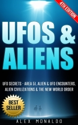
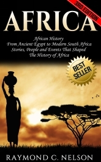
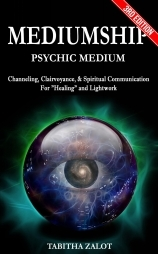
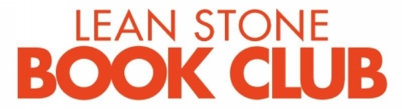

© 版权所有 2016 Louie Ross - 保留所有权利。
以任何方式复制、复印或传播本文档的任何部分，无论是电子方式还是印刷格式，都是非法的。严禁录制本出版物，除非获得出版商书面许可，否则不允许存储本文档。保留所有权利。
本文档中提供的信息被声明为真实和一致的，因使用或滥用其中包含的任何政策、流程或指导而产生的任何责任，无论是疏忽还是其他原因，都完全由读者承担。在任何情况下，出版商都不会因本文档中的信息而承担任何赔偿、损害或金钱损失的法律责任或责任，无论是直接还是间接的。
除出版商持有的版权外，各作者拥有所有版权。
法律声明：
本书受版权保护。仅供个人使用。未经作者或版权所有者同意，您不能修改、分发、销售、使用、引用或转述本书的任何部分或内容。如有违反，将追究法律责任。
免责声明：
请注意，本文档中包含的信息仅用于教育和娱乐目的。我们已尽一切努力提供准确、最新和可靠的完整信息。不提供任何形式的保证。读者承认作者不提供法律、财务、医疗或专业建议。
通过阅读本文档，读者同意在任何情况下，我们都不对因使用本文档中包含的信息而产生的任何直接或间接损失负责，包括但不限于错误、遗漏或不准确。
可能是最好的在线读书俱乐部…
“如果您热爱书籍，您会爱上精石读书俱乐部”
任何书迷都会喜爱的独家优惠！
点击这里了解更多（免费）！
早在克里斯托弗·哥伦布偶然发现现在被称为北美的土地之前，就有人在这片土地上生活了几个世纪，他们就是原住民。在这本书中，您将了解真正的第一批北美定居者；您将了解他们的早期历史、多样的文化、部落之间的差异，还将了解历史上一些最著名的原住民人物。
我希望在这本书结束时，您能对原住民文化有更深的理解，或者更好的是，它激发了您内心对知识的不可抑制的渴望。
数千年来，早在被欧洲入侵者殖民之前，美洲就被一个多元化的群体所居住，他们将这个国家分为各个独立的民族，每个民族都有自己的传统和语言，这比克里斯托弗·哥伦布偶然发现他们要早得多。这些骄傲而高贵的土著居民一直靠土地为生，基本上与环境和谐相处。通过阅读这本书，您将能够发现关于第一批或原始北美定居者的许多有趣事实；关于他们的早期历史、他们可能来自哪里、他们多样的文化以及居住在这片美妙原始土地上的各个部落之间的许多差异，包括了解历史上一些最著名的原住民人物是谁。
我希望通过向您展示这本书，它将帮助您对前欧洲时代（通常被称为前哥伦布时代）的原住民文化有深刻的欣赏和理解，并希望激发您内心对知识的不可抑制的渴望。
如果您问孩子们谁是第一个发现美洲的人，他们脑海中通常会浮现的第一个名字是克里斯托弗·哥伦布；事实上，相当多的成年人也会给您同样的答案。从技术上讲，哥伦布确实在他的旅程中偶然发现了北美（他实际上在寻找香料群岛，而不是特别寻找北美），但当他下船时，已经有人在等他了。雪上加霜的是，哥伦布称这些土著为”印第安人”，因为他真的以为自己在印度。撇开哥伦布的故事不谈，这里真正的谜团是原住民是如何到达那里的。
如果你问任何一个孩子和大多数成年人，谁是第一个发现美洲的人，他们很可能会告诉你是克里斯托弗·哥伦布；这是因为学生们在学校里世代相传地被教导，西班牙探险家克里斯托弗·哥伦布是第一个发现美洲的人。事实是，他在技术上是第一个被认定发现北美洲的欧洲人，当时他正在寻找香料群岛。历史很大程度上只从欧洲的角度被传授；它没有考虑到北美洲，特别是整个美洲其他地区，几千年来一直是其原住民的家园。当哥伦布到达时，那里有很多人居住，一些部落会欢迎他，其他部落则会表现出敌意。事实上，哥伦布在到达时甚至没有意识到他在北美洲；他实际上在寻找通往印度的替代路线，这就是为什么他错误地称原住民为”印第安人”，这个错误的称谓从那时起一直沿用至今，尽管许多人将其限定为”红印第安人”来区别。后来证明，在哥伦布之前很久，包括维京人、中国人和拉丁美洲人在内的其他航海者就已经在东海岸和西海岸访问过北美洲了。
关于美洲原住民如何首次踏上北美洲的传统理论是克洛维斯优先理论。克洛维斯是一个古老的民族，他们似乎突然出现在历史记录中，就像他们突然出现一样，他们也以同样的方式消失了。
根据对几件克洛维斯文物进行的放射性碳定年，他们的文明出现在公元前9200年左右，仅仅500年后就突然从地球上消失了。科学家们推测，克洛维斯人来自西伯利亚北部的一个狩猎采集部落，他们在冰河时代偶然进入了北美洲。在那个时期，由于地球上大部分水仍然冻结在极地冰盖的巨大冰川中，海平面非常低。
由于冰河时代海平面如此之低，存在许多”陆桥”，曾经将现在的大陆彼此连接。克洛维斯人被认为走过了白令陆桥，这座桥现在位于被称为白令海峡的水体下面。科学家认为克洛维斯人从西伯利亚向南迁移，是因为他们在追随他们的主要食物来源——乳齿象和猛犸象。他们发现北美洲有大量这些野兽群，所以决定在那里定居。
科学研究和发现的最新进展现在正在质疑曾经被接受的克洛维斯优先理论，其中最有说服力的是肯纳威克人的发现。
1996年，一群考古学家挖掘出了一个古代男子的遗骸，他们认为这个人有9000年的历史。这个古代人的奇怪之处在于，头骨有一个长颅骨和相对狭窄的面部，这些是欧洲或印度人的典型特征。另一方面，美洲印第安人往往有更圆的头骨和更宽的颧骨，这是中欧和北欧的共同特征。
如前所述，许多人认为克里斯托弗·哥伦布是第一个遇到美洲原住民的外国人。然而，许多历史学家认为他不是第一个发现北美洲的人；他只是第一个召开新闻发布会的人。事实上，哥伦布在当时甚至没有意识到他在北美洲；他实际上在寻找通往印度的替代路线，这就是为什么他错误地称原住民为”印第安人”，这个错误的称谓持续了很长时间。
迄今为止在美洲发现的最早文明遗迹大约有12500年的历史，最古老的人类遗骸大约有11000年的历史，是在巴西发现的一具骷髅，虽然这不是在北美洲，但很可能来自这个地区的人们在某个时候迁移到了北美洲。这具骷髅与今天的现代美洲原住民不相似，它的面部特征更像被称为澳洲土著的原住民，这些人可以追溯到60000年前，可以追溯到被认为起源于非洲的最早人类。
大多数人不知道的是，美洲原住民人口不仅仅是一个大的人群集合，而实际上是不同部落的集合，每个部落都有自己的习俗、信仰和文化。在前哥伦布时代，北美洲有超过2000个独立的部落，由于这些部落数量庞大，我们无法在本出版物中提及所有部落。然而，我们将讨论一些较大和较知名的部落，包括他们的文化和传统。
美洲原住民历史在很大程度上被主流学校和全世界的教育系统所忽视。许多人不了解或不知道的是，美洲原住民人口并不是一个相关人群的大集合，而是由具有非常不同背景的不同部落组成的混合体。每个部落都有自己独特的信仰、习俗和文化。有些主要是狩猎采集者，因为占据着广阔的土地而得以生存，而其他部落则主要是农民，倾向于在一个地区定居，他们的生活方式从游牧、半游牧到定居不等。北美文化和史前石器时代的生活方式几千年来没有太大变化，主要是因为在这段时间里没有改变的必要。他们没有发展出青铜时代或铁器时代文化，他们的武器和工具都是用石头制作的，因为他们没有使用金属的经验，他们的文化在某些方面是原始的，但在个人发展和生活质量方面却非常先进。
美洲原住民的宗教和传统基于万物有灵论(Animism)文化，这是一个共同的教义或信仰，几乎所有北美部落或民族都共享。万物有灵论是一种基于精神理念的宗教，认为宇宙和宇宙中所有自然物体都有灵魂或精神；人们相信灵魂或精神不仅存在于人类身上，也存在于动物、植物、树木、岩石等之中。这种信仰和文化延伸到自然现象，如雷暴和雨水，以及地理特征，如山脉、洞穴或河流也拥有灵魂或精神。美洲原住民没有科学来解释自然；这导致他们相信太阳、雨水和其他力量都由精神控制。在宗教方面，美洲印第安人崇拜不同的动物、植物、太阳、雨水和风。在他们的节日、仪式和祈祷中，他们试图获得这些神灵的恩惠。
随着时间的推移，美洲原住民将他们的万物有灵论宗教和文化扩展为对大灵或精神的信仰，也相信他们投资并关心人类生活，因此美洲原住民举行仪式和仪轨来崇拜或安抚精神。在许多仪式中展示的不同仪轨和信仰显示了不同想法和兴趣的融合，通过促进和保护他们的狩猎和农业以及人民的生存，同时向精神表示尊重。
许多曾经居住在北美部分地区的部落已经消失，其中相当一部分是因为被其他更大的部落吸收。一些”失落的部落”在部落间争端和战争中被歼灭，这并不罕见。尽管许多美洲原住民主要是和平的，但他们对自己的土地有强烈的领土意识和保护意识，因为主流信仰是土地是精神或神灵的礼物。
随着贪婪土地的外国人的到来，许多美洲原住民在土地所有权冲突中丧生，因为他们理所当然地想要保留自己的家园。数百万美洲原住民，远比在土地战争中被杀的人数要多，死于外国人到达他们海岸并穿越他们土地时传播的许多传入疾病，当地人对新病毒没有抵抗力或防御能力。
北美是一个拥有数百个不同部落和亚部落的巨大国家。虽然有许多值得提及的伟大美洲原住民部落，但由于数量庞大，它们无法全部写入这本书，因此我们将只讨论其中一些最大的部落，包括他们的文化和传统。
纳瓦霍族拥有超过30万人，是北美最大的美洲原住民部落。他们的名字实际上来自普韦布洛印第安语，意思是”农田”，他们得到这个称号是因为与他们最亲近的亲属阿帕奇族不同，纳瓦霍族主要是农民，生活在永久定居点。纳瓦霍族传统上称自己为迪内(Diné)（在他们的语言中意思是”人民”）；然而，当他们说英语时，他们确实使用纳瓦霍来描述自己。
纳瓦霍族最初来自”四角”地区，这是一个包括亚利桑那州、犹他州、新墨西哥州和科罗拉多州的巨大区域。虽然他们后来已经从他们的原住地扩展出去，但今天仍有许多纳瓦霍族人生活在他们的古老领土上。
过去，纳瓦霍族只有一个领袖——酋长，由部落长老会议同意选举产生。与主要依靠大臣来实际管理王国的欧洲君主不同，纳瓦霍酋长是亲力亲为的。他（只有男性可以成为酋长）通常在部落内出现误解时充当调解人；他还需要就关系到人民福利的重要事务做出决定。现在，纳瓦霍民族选举自己的总统和部落委员会，而不是酋长。
纳瓦霍族（和其他美洲原住民部落）现在居住的土地被称为保留地；它们就像一个小的（几乎）主权国家。这意味着纳瓦霍族有自己的政府和自己的警察部队。然而，由于他们也是美国公民，纳瓦霍族仍然必须遵守联邦法律。
纳瓦霍族在仪式和仪轨方面非常重视。实际上，他们有持续长达四天的仪式，有时甚至更长，他们需要数十人的帮助才能不间断地吟唱。
[纳瓦霍人在文化上很敏感，非常重视保持和应用他们的传统信仰和价值观，通过遵守仪式场合和仪式，他们与精神习俗有着强烈的联系，并尊重他们的祖先。他们的仪式可以持续4天或更长时间，为了执行这些仪式，他们通常需要几十个人，这样他们就可以为这些仪式不间断地吟唱。]
[纳瓦霍传统中最引人注目的是他们对沙画的喜爱。他们会使用粉碎的彩色岩石，如红砂岩、黄赭石、石膏和木炭来创作复杂的设计。与通常用于美学的西方绘画不同，纳瓦霍沙画实际上是他们治疗仪式的一部分。此外，与其他艺术作品不同，纳瓦霍沙画总是临时性的。]
[切罗基人最初来自美国东南部，但由于1800年代的印第安人迁移计划，政府在安德鲁·杰克逊总统的命令下，将他们从原住地迁移到俄克拉荷马州（你稍后会了解更多关于这场悲剧的内容）。]
[与所有人都在一个庞大政府统治下的纳瓦霍人不同，美国承认切罗基人有三个不同的，如果你愿意的话，可以说是亚部落。这些切罗基部落是俄克拉荷马州的切罗基民族、俄克拉荷马州的联合基图瓦带，以及居住在北卡罗来纳州的东部切罗基印第安人带。尽管美国政府确实承认切罗基部落在某种程度上是主权的，但作为美国公民，他们仍然受联邦法律约束。]
[切罗基人以其原住民艺术品而闻名，特别是他们的星星被子。他们通过使用小块撕碎的布料制作这些被子，然后将它们缝成复杂的图案，通常以八角星为特色，因此得名。除了制作被子，切罗基人还制作美丽的编织篮子。]
[切罗基人全年都会庆祝一些节日。例如，为了庆祝第一批玉米成熟的时间，切罗基人会庆祝绿玉米仪式，通常在6月底或7月初举行，持续大约四天。在节日期间，人们会表演仪式舞蹈，如踩踏舞和水牛舞。切罗基人也会在节日期间禁食一两天，在最后，他们会进行仪式清洁，然后参加期待已久的盛宴。]
[也被称为拉科塔人或达科塔人，苏族是第三大美洲原住民部落。在过去，苏族是游牧民族，这意味着他们会迁移到主要食物来源所在的地方，在他们的情况下，他们通常跟随巨大的野牛群。除了野牛，苏族也以麋鹿、羚羊和火鸡为生。不过，最初苏族人来自他们在现在的威斯康星州、明尼苏达州，当然还有北达科他州和南达科他州的原住地。]
[苏族这个名字来自奥吉布韦语（奇佩瓦语）中意为”小蛇”的词。当他们彼此交谈时，他们称自己为拉科塔人或达科塔人（取决于说话者的方言），但当他们说英语时，他们也使用苏族这个名字。]
[就像切罗基人一样，苏族将自己组织成七个主要部落（姆德瓦坎顿、西塞顿、泰顿、瓦佩库特、瓦佩顿、扬克顿和扬克顿艾），但这些划分更多地服务于文化而非政治分割。与纳瓦霍人不同，苏族各部落彼此独立运作，这意味着他们每个都有自己的部落领袖。然而，尽管他们是自治实体，苏族各部落仍然受美国或加拿大法律管辖，这取决于他们的保留地位于边境的哪一侧。]
[苏族妇女以她们的珠饰艺术而闻名，这些艺术品通常以珠宝的形式出现。另一方面，男性则使用水牛皮作为画布创作精美的绘画。]
[普韦布洛人口不如前三个部落那么多，但他们在过去几年中变得相当受欢迎，特别是在2012年之前的几年里。让普韦布洛人与其他美洲原住民部落不同的是他们的房屋，主要使用土坯、岩石和其他当地材料。他们还将房屋建成建筑群，这意味着他们的房屋通常彼此相邻，而且通常有几层楼高。普韦布洛人使用这种建筑方法，因为这样更容易防御，因为他们已经控制了制高点。]
[他们的房屋也是普韦布洛人获得独特绰号的原因。在西班牙占领现在的美国西南部期间，西班牙士兵称这些奇怪的建筑为”pueblos”，意思是”城镇”，他们随后称所有住在建筑群中的人为普韦布洛人。]
[尽管普韦布洛人口不是很多，但他们仍然细分为19个部落，其中包括霍皮人，你稍后会了解更多关于他们的信息。在过去，首席祭司也是每个普韦布洛亚部落的领袖。现在，尽管每个部落仍然有自己的首席祭司，但大多数普韦布洛人现在选举一名州长和一个部落委员会来领导他们。]
[与大多数其他美洲原住民部落不同，西班牙罗马天主教传教士影响了许多普韦布洛部落的文化和传统。以至于大多数部落实际上根据他们各自的守护圣人庆祝节日。然而，他们仍然坚持古老的信仰体系，大多数部落仍然举行由首席祭司主持的神圣仪式。]
普韦布洛印第安人在2000年代末期进入主流流行文化的原因是，霍皮族作为他们的一个分支部落，有一个关于世界末日的预言。来自世界各地的人们真的相信，一旦”霍皮长计历法”结束（这发生在2012年12月21日），这意味着世界即将终结。
幸运的是，那一天就像其他任何一天一样过去了，没有发生任何灾难。然而，尽管他们的末日预言没有实现，许多人仍然相信这只是一个误解，它真正的意思是我们所知道的世界的终结，某种程度上像是一种精神觉醒。
这些只是众多美洲原住民部落中的一小部分，但即使你只得到了一个小样本，这也可能足以点燃你内心的火焰，让你想要更多地了解他们。
在前欧洲时代，大体上估计有500万到800万美洲原住民生活在分布于整个国家和加拿大边境地区的社区中，这些都是建立良好的；他们依靠森林、清洁的湖泊和河流来提供食物、衣服、燃料和住所。他们用来塑造栖息地的主要工具之一是火；它使创造耕种区域、清理旅行和狩猎空间以及为牲畜提供草地成为可能。主要种植的作物是玉米、豆类和南瓜。通常是女性的工作来耕种土地，而男性则捕鱼和狩猎。他们使用自然种植方法，几乎不需要犁地、挖掘、除草或灌溉。许多部落是半游牧的，由于季节变化经常有两个房子，一个在山丘上，另一个在沙漠地区，以利用变化的季节性气候条件。有趣的是，与西方传统中女性离开家庭与男性生活并经常加入男性家庭不同，在美洲原住民文化中，通常是男性离开家庭，经常切断所有联系并加入女性家庭。
当大多数人谈论美国内战时，他们谈论的是来自北方的人与来自南方的人作战，但他们不知道的是，美洲原住民也在冲突中发挥了作用，其中大多数人是被环境所迫卷入其中的。就像任何其他民族一样，美洲原住民部落在许多事情上并不真正同意彼此，这就是为什么他们中的大多数人在内战期间很容易选择立场。在本章中，你将学到比从学校学到的更多的历史；你将了解美洲原住民的参与，以及对美国最血腥战争可能的决定性贡献。
尽管大多数美洲原住民部落寻求中立，并选择在内战期间不选择立场，但其中许多人别无选择。
人们会认为美洲原住民不想参与白人之间的冲突，但他们有充分的理由让很多人参军加入两方中的任何一方。是的，与你在大多数西部片和时代电影中看到的相反，有美洲原住民参军加入了邦联军队。一些部落加入邦联的原因之一是他们对联邦政府有一些敌意，主要是因为联邦政府强迫他们离开原住地，让他们一路行进到印第安领土，即现在俄克拉荷马州的一部分，也被称为臭名昭著的眼泪之路(Trail of Tears)。
除了为他们倒下的兄弟寻求报复外，一些美洲原住民部落实际上拥有奴隶。切罗基部落在所有美洲原住民部落中拥有最多的奴隶；大约在1860年，就在内战开始前，切罗基人据说拥有大约6000名黑人奴隶。然而，并非所有切罗基部落成员都拥有奴隶，只是少数精选的，可以说是精英家庭。这些美洲原住民家庭实际上穿得像种植园主，住在巨大的豪宅里；然而，与南方奴隶主不同，他们的奴隶实际上有更好的生活条件。
在美国内战开始时，联邦军队发现自己处于劣势；他们缺乏熟练人力，邦联军队正在侵犯他们的领土。在这个黯淡的时期，亚伯拉罕·林肯总统开始呼吁东海岸的美洲原住民部落加入他们的困境。
大多数为联邦军队服役的美洲原住民部落成员并不真正关心废除奴隶制或美国宪法。他们服役的主要原因是招募人员承诺给他们丰厚的报酬，与正规士兵相同的福利，他们希望通过加入联邦政府，至少能让他们的一些土地归还给他们。
现在，你会认为想要废除奴隶制的联邦军队实际上会对他们的美洲原住民兄弟更友善，但他们实际上比邦联更种族主义。大多数联邦军队实际上传播着美洲原住民新兵是醉酒雇佣兵的观念。邦联实际上将美洲原住民士兵混入他们的队伍中，而不仅仅是给他们单独的小队。他们甚至允许美洲原住民成为军官，其中一个，斯坦德·韦蒂(Stand Watie)，甚至通过军阶成为准将（你稍后会了解更多关于他的功绩），如果邦联赢得战争，美洲原住民被承诺在邦联国会中占有一席之地。联邦军队很少向为他们作战的美洲原住民授予这些福利。
[然而，这并不意味着南方联盟军队在对待美洲原住民新兵的方式上没有任何过错。其中一个例子是，切罗基新兵被命令攻击邻近的克里克部落成员，因为他们忠于联邦。这违背了他们关于亲族关系和价值观的原住民理想，这显然给南方联盟的切罗基成员带来了动荡，导致许多人放弃了自己的岗位，进而在切罗基民族内部造成了分裂。]
[当历史书籍谈论内战期间涌现的英雄时，大多数只会讲述像尤利西斯·S·格兰特、罗伯特·E·李和威廉·特库姆塞·谢尔曼这样最著名的人物。你很少会发现任何关于在梅森-迪克森线两侧作战的勇敢美洲原住民的记述。在这里，你将了解三位在内战期间贡献最大的最著名美洲原住民。]
[如前所述，斯坦德·韦蒂是南方联盟军队中军衔最高的美洲原住民，官方军衔为准将。他还获得了作为最后一位向联邦军队投降的南方联盟军官的荣誉。]
[斯坦霍普·韦蒂(原名Degataga，意为”站稳脚跟”)是Oo-wa-tie的儿子，Oo-wa-tie是纯血切罗基人，而苏萨娜·里斯是半欧洲血统的切罗基女性。韦蒂在摩拉维亚传教学校求学时学会了说英语。后来，他还帮助他的兄弟埃利亚斯·布迪诺出版了《切罗基凤凰报》，这是一份部落报纸。]
[1829年，由于淘金热导致的白人定居者激增，迫使大多数切罗基人从他们在乔治亚州的部落土地迁移到位于更西边的保留地。韦蒂是支持部落迁移和重新安置的少数部落领袖之一；他相信这是部落保持自治权的唯一途径。韦蒂与他的兄弟和叔叔一起共同签署了《新埃科塔条约》，这意味着切罗基人放弃了对他们在乔治亚州古老家园的主张，以换取在印第安领土(现在是俄克拉荷马州的一部分)的大片土地。]
[然而，根据切罗基法律，任何转让部落土地的人都应判处死刑，这就是韦蒂的兄弟和叔叔的命运。韦蒂本人勉强逃脱了处决，成为签署支持《新埃科塔条约》派系中唯一幸存的成员。由于他在切罗基民族中拥有巨大的追随者，韦蒂成为部落政治中的杰出人物，这意味着他经常与切罗基酋长约翰·罗斯发生冲突。]
[在内战爆发之前，斯坦德·韦蒂已经是一个成功的人。他在印第安领土内建立了最大最成功的种植园之一，是的，他是一个奴隶主。当战争最终爆发时，韦蒂毫不犹豫地为南方联盟军队提供帮助，并组建了第一个完全由切罗基战士组成的团队——切罗基骑兵步枪团。韦蒂和他的手下将成为南方联盟最成功的作战团队之一，这要归功于韦蒂对地形的深入了解，以及他对游击战术的成功运用。]
[斯坦德·韦蒂最大的军事成就之一发生在1864年夏天。他从一个俘虏那里得知，一支补给车队即将离开斯科特堡，前往吉布森堡。这些补给是为3000名士兵和大约10000名在吉布森堡避难的难民准备的。韦蒂知道车队将要走的路线，在几位南方联盟将军同伴的帮助下，他计划了一次大胆的攻击，让他们控制补给车队。]
[当韦蒂和他的手下找到补给车队时，他们没有立即攻击；这样做是愚蠢的，因为有很多武装警卫保护着车队。作为一个出色的战术家，韦蒂等到夜幕降临才发起攻击。当车队警卫熟睡时，韦蒂和他的部队开始了攻击。他们没有攻击睡着的警卫，而是攻击了拴在警卫营地附近的骡子。骡子狂奔而去，随之而去的还有补给链将货物运送到目的地的任何机会。由此产生的混乱也导致所有措手不及的警卫逃离战场，而不是试图反击。]
[斯坦德·韦蒂和他的部队装载了尽可能多的联邦补给，然后烧毁了其余的，这样车队的增援部队就没有什么可以收回的了。这一大胆而天才的行为巩固了斯坦德·韦蒂在内战时期最杰出战术家中的地位。不幸的是，尽管韦蒂的这一壮举给南方联盟军队带来了巨大的士气提升，但为时已晚，不足以扭转战争的局势。]
[当亚伯拉罕·林肯总统寻找至少750,000名男子加入联邦军队时，一位来自纽约奥尔巴尼的年轻土木工程师伊利·S·帕克响应了号召，与他的一些同事一起前往最近的招募办公室。虽然他的大多数同事因为技能和教育背景而被接受并获得军官军衔，但帕克被拒绝了。人们会认为像帕克这样有技能的人很容易进入军队，但当时的问题是他是托纳万达-塞内卡美洲原住民部落的酋长。]
[当时，原住民美国人主要因为联邦政府不承认他们为国家公民而不被允许参军。然而，这种挫折并没有阻止帕克。他游说一些更有影响力的朋友帮助他进入军队，而帕克的这些朋友中恰好有一位是尤利西斯·S·格兰特将军。]
[伊利·S·帕克和尤利西斯·S·格兰特相遇背后的故事相当奇特。当时，帕克在犹他州加利纳从事运河建设和维护工作，在那里他遇到了年轻的格兰特，格兰特当时在他父母的马具店工作。两人在军事生活方面能够相互理解；格兰特的军事生涯当时陷入停滞，所以他被迫搬回家乡，而帕克因为他的原住民血统甚至无法进入军队。当帕克在格兰特陷入一场相当激烈的酒吧斗殴时前来营救时，两人成为了密友。]
[恰巧内战的爆发重新激活了格兰特的军事生涯，当他在军衔中晋升时，他记起了老朋友帕克。格兰特招募了帕克并给了他上尉军衔，不仅如此，他还让帕克担任他的军事秘书。作为一位忠诚的朋友，帕克总是陪伴格兰特到战场上的任何地方。事实上，当南方邦联将军罗伯特·E·李投降时，伊利·S·帕克就在同一个房间里。此外，当罗伯特·E·李在投降后与伊利·S·帕克握手时，他称赞帕克说：“我很高兴在这里看到一个真正的美国人。”帕克回应道：“我们都是美国人。”]
[亨利·贝里·劳里]
[在内战初期，南方邦联”国民警卫队”围捕了他们在北卡罗来纳州及其周边地区能找到的每一个原住民美国人，并强制征召他们入伍充当廉价劳动力。然而，一些”有色人种自由民”选择躲在沼泽和湿地中，这些人中包括伦比族。]
[在沼泽深处，一些逃脱强制劳改营的伦比族人与其他逃跑的奴隶和联邦士兵联合起来，他们组成了一个继续逃避和对抗北卡罗来纳州国民警卫队的团伙，他们的领袖是伦比族的亨利·贝里·劳里。由于伦比族在北卡罗来纳州森林和沼泽地生活了几个世纪，他们对追捕他们的国民警卫队有优势。]
[在内战的最后几个月，亨利·贝里·劳里和他的强盗团伙会袭击南方邦联的征兵官员。这使他得到了南方邦联军队很多不想要的关注。国民警卫队以偷牲畜的莫须有罪名逮捕了亨利·贝里的父亲和兄弟，让他们挖自己的坟墓，然后朝他们两人的头部开枪。据说，亨利·贝里·劳里目睹了整个过程，因为他就躲在距离处决现场几码外的灌木丛中。亨利·贝里在父亲的坟墓前发誓，他将尽其所能阻挠南方邦联军队，他不知道报仇的机会仅仅几天后就会到来。]
[1865年3月，威廉·特库姆塞·谢尔曼将军在攻占亚特兰大后，被尤利西斯·S·格兰特将军告知要海路北返波托马克河，对南方邦联进行最后的决定性打击。然而，谢尔曼有另一个想法；他要率领他的军队陆路行军，穿过北卡罗来纳州，这样他们就能有效地将罗伯特·E·李将军的军队困在他们和格兰特将军的部队之间。然而，为了使他的计划奏效，他需要有人引导他的部队穿过茂密的森林和沼泽地，这就是亨利·贝里·劳里登场的地方。]
[亨利·贝里·劳里和他的团伙与谢尔曼将军会面，提出引导他的部队穿过沼泽走向胜利。这一大胆壮举改变了战争的走向，为联邦军队锁定了胜利。]
[这些只是许多与联邦和南方邦联士兵并肩作战的勇敢原住民美国人中的一部分。无论谁赢得了战争，你都可以看出这些人并不缺乏勇气、坚持和技能。]
[当时许多人刻板地认为原住民美国人部落成员是野蛮人；认为他们是只知道战斗和杀人的未开化野蛮人。然而，多年来，人们对原住民美国人的看法实际上有所改善，特别是当他们中的个人在美国历史上留下姓名时。]
[以下是一些在美国历史上发挥关键作用的最著名的原住民美国人。]
[杰罗尼莫]
[围绕着这位仅以杰罗尼莫闻名的传奇原住民美国人有许多故事，许多人甚至无法区分这些传说中哪些是事实，哪些是虚构。]
[传奇的阿帕奇战争领袖杰罗尼莫于1829年6月出生在诺多约恩峡谷，该地区现在是墨西哥的一部分。据关于他的故事所说，当杰罗尼莫还是个男孩时，他吞下了他第一次猎杀的心脏（不清楚是什么动物），这确保了他将永远是一个成功的猎人，他的敌人永远无法抓住他。据说杰罗尼莫拥有各种力量。一些故事说他有超感官知觉，一些甚至声称他可以停止时间。]
杰罗尼莫生活在美国西部确实”狂野”的时代。那是一个土地属于你，直到别人用武力从你手中夺走的时代。杰罗尼莫是阿帕奇印第安民族的一员，严格来说这不只是一个部落；实际上有几个群体或分支，杰罗尼莫属于最小的一个——奇里卡瓦族。阿帕奇人是游牧民族，意味着他们根据季节迁徙。
虽然阿帕奇人是勇猛的战士（他们的长者在他们年幼时就训练他们在野外生存），但他们是一个和平的民族。只有当其他群体前来强行夺取他们的土地时，他们才会反击。对他们来说，土地不仅仅是家园；它是神灵的恩赐。
对杰罗尼莫来说，战斗几乎成了一种生活方式，主要是因为他这一代见证了最多来自边境之外的入侵者，有些甚至来自海外。他们先是与西班牙人作战，然后与想要占领他们土地的墨西哥人作战。然而，让杰罗尼莫从阿帕奇战士成为战争领袖的，不是为自由而战，而是为家人而战。
有一天，当杰罗尼莫和他的部队外出进行贸易旅行时，一群墨西哥士兵袭击了他的营地并洗劫了那里。袭击的消息传到了杰罗尼莫和他的手下那里，但为时已晚。当晚他们返回时，杰罗尼莫发现了他母亲、妻子和三个幼子的尸体。
悲痛欲绝的杰罗尼莫烧毁了他家人的所有物品，独自前往荒野。在他悲伤时，一个声音对杰罗尼莫说话，承诺他：“没有枪能杀死你。我会从墨西哥人的枪中取走子弹，只留下火药，我会引导你的箭矢。”凭借这突然”赋予”他的力量，杰罗尼莫聚集了大约200人的队伍，他们的唯一目的就是追捕那些杀害他们家人的墨西哥士兵并进行报复。10年来，杰罗尼莫和他的袭击者队伍一直在恐吓墨西哥军队。
大约在1850年，杰罗尼莫敌人的面貌发生了变化。墨西哥-美国战争后，美国政府接管了原本属于墨西哥人的大片领土，他们也占领了属于阿帕奇人的地区。西南部发现黄金以及随之而来的”淘金热”只是加剧了美国政府与阿帕奇人之间的紧张关系。杰罗尼莫和他的阿帕奇战士同伴会袭击并杀死那些愚蠢到踏入他们领土的矿工和探矿者。
奇里卡瓦人的酋长科奇斯，也是杰罗尼莫的岳父，同意了联邦政府的提议，将他的人民迁移到位于阿帕奇领土优越位置的保留地。当然，这个决定让杰罗尼莫很不满，但他服从了酋长的命令。
然而，几年后，科奇斯去世了，联邦政府违背了他们的承诺。他们强迫奇里卡瓦人进一步向北迁移，并将他们的土地给了定居者，对杰罗尼莫来说，这是最后一根稻草。杰罗尼莫和一小队战士对美军进行游击战，五年来他一直无法被抓获。
曾经有一段时间，军队派出了近5000名士兵，唯一目的就是抓捕杰罗尼莫。然而，阿帕奇人一生都生活在沙漠荒野中，他们对地形了如指掌；士兵们虽然人数众多，却连这位传奇阿帕奇战士的影子都抓不到。
在与美军作战多年后，1886年夏天，杰罗尼莫和他的一小队战士向美国政府投降了。
杰罗尼莫在1906年出版了他的自传，作为退休后赚钱的方式，这是在他去世前3年。在书中，他叙述了如何遇见妻子、他们的婚姻以及导致他成为自由战士的家人大屠杀。他详细叙述了他的一生，从抵抗墨西哥和美国政府的岁月到投降，再到后来成为名人时会见罗斯福总统并出现在1904年圣路易斯世界博览会上的生活。
科奇斯是最著名的阿帕奇部落领袖之一；在历史意义上，他实际上仅次于杰罗尼莫。科奇斯是带领他的人民成功抵抗并最终击退墨西哥入侵者殖民他们土地的人。
早在西班牙人仍统治墨西哥和亚利桑那州某些地区时，他们知道必须做些什么来安抚同样生活在那些地区的阿帕奇人。西班牙人知道与他们作战不仅困难，而且代价高昂。所以他们的做法是通过提供劣质火器和廉价酒类来使阿帕奇人依赖西班牙人。然而，当墨西哥人获得独立后，他们停止了对阿帕奇人的供应链，而是试图使用武力让他们屈服。
墨西哥人在一次战斗中杀死了科奇斯的父亲，这导致他心怀怨恨。科奇斯发誓要为墨西哥人对他父亲所做的事情报仇。他是如此出色的领袖，即使墨西哥人人数更多，武器也更强大，他们几乎连科奇斯的边都碰不到。这就是为什么人们在称赞某人很厉害时会使用”科奇斯”这个词。
[强大的奇里卡瓦族首领科奇斯因为对欧洲定居点进行袭击而令人闻风丧胆；他被错误指控绑架了一个牧场主的儿子并遭到逮捕。这一事件成为他的部落与美国政府严重冲突的开端，他进行了多次袭击，与士兵作战，杀害了许多定居者，迫使他们放弃家园。他还造成了数十万美元的财产损失。军队试图抓捕他，但无法成功，因为他是游击战专家，熟悉地形，藏身在龙山(Dragoon Mountains)中，死后也被埋葬在那里，死因是未知的疾病，可能源自欧洲。]
[由于他的袭击和对定居者的杀害，以及当局无法抓捕他并将其绳之以法，他们必须采取行动，所以政府向科奇斯和他的所有族人提供大赦，条件是他们停止敌对行动并迁移到亚利桑那州东南部为他们划定的大片土地上。科奇斯在两年后去世。]
[坐牛]
[坐牛可能是最强大的，也无疑是所有美洲原住民酋长中最著名的一位，他出生于1831年，在现在属于南达科他州的荒野中。他是”再次归来”的儿子，一位备受尊敬的苏族战士。]
[作为一个小男孩，坐牛想要变得像他父亲一样强大，但他在战争技能方面并没有表现出任何特殊的天赋；其他部落成员甚至称他为”迟缓”，因为他缺乏父亲所具有的技能。然而，年轻的坐牛的情况开始迅速改变。他在10岁时杀死了第一头成年水牛，当他14岁时，他率领一队拉科塔战士与敌对部落作战。由于他的英勇，部落给了他”Tatanka-ly-otanka”这个名字，意思是”一头坐着的公牛”，白人定居者将其简化为”坐牛”。]
[坐牛在1870年代开始成为白人的敌人，正值定居者在黑山发现黄金的时候，黑山是美洲原住民的圣地。情况并非总是如此，事实上，在淘金热之前一切都很平静。根据双方在1868年签署的拉勒米堡条约，美国政府承认黑山为美洲原住民领土。]
[然而，当白人探矿者大批涌入苏族领土时，美国政府搁置了条约，积极对任何阻止他们占领土地的原住民部落宣战。]
[在小比格霍恩河畔的太阳舞仪式上，坐牛连续跳了36小时的舞，他还割伤自己的手臂作为祭祀，整个过程中没有喝一滴水。在仪式的高潮时刻，在几乎迷幻的状态下，坐牛得到了一个幻象，他和他的战士队伍将击败美国军队。]
[在得到幻象的几天后，坐牛酋长率领他的部队在玫瑰花蕾战役中获得胜利。一周后就是著名的小比格霍恩之战，坐牛和他的数千名美洲原住民战士军队屠杀了乔治·阿姆斯特朗·卡斯特将军人数不足的200多人部队。据说卡斯特败北是因为他低估了苏族的战斗能力和人数；最终，是傲慢导致了他的失败。]
[卡斯特的失败对美军士气造成了沉重打击，因此他们加倍努力控制美洲原住民领土。无法再抵御白人入侵者，坐牛率领他的人民离开故土前往加拿大，在那里停留了大约四年。]
[1881年，坐牛回到了他们的故土，但美军已经在等着他，并将他监禁了大约三年。1885年，坐牛与著名的神枪手安妮·奥克利结识，她说服他加入了布法罗比尔·科迪的西部野外表演。坐牛在表演中不需要做太多事情，只需要每场表演在竞技场里骑马转一圈，他每周就能得到50美元，在那个时代这是一笔相当大的收入。]
[坐牛厌倦了在白人中间的生活；他与布法罗比尔的剧团巡演时看到的大量贫困现象震惊了这位骄傲的美洲原住民酋长，再加上他从观众那里受到的大量敌意。他决定这种生活不适合他，于是回到了他的人民身边，回到了他以前的生活方式。就在他离开之前，坐牛说：“我宁愿作为印第安人死去，也不愿作为白人活着。”]
[坐牛后来加入了一个名为”鬼舞”的美洲原住民运动，这实际上是一个旨在将白人从美洲原住民领土上赶走的仪式。当局担心现在坐牛加入了他们的成员，这个运动会获得更多的追随者，所以在1890年12月15日，他们突袭了坐牛的家，把他从小屋里拖了出来。坐牛和他的团队对这种突然的敌对行为进行了报复，随即爆发了枪战。这位伟大的苏族酋长在交火中头部中弹，立即死亡。他的遗体安葬在叶茨堡；在1950年代，他的遗体被挖掘出来并迁移到南达科他州的莫布里奇。]
[疯马]
[塔顺卡·维特科出生于1840年，在现在属于南达科他州急流泉的地区，他是拉科塔族的成员，拉科塔族是苏族美洲原住民部落中最大的一支。他如何得到”疯马”这个名字尚不清楚，但大多数历史学家推测他在证明了自己作为美洲原住民战士的技能后，从父亲那里继承了这个名字。]
[当疯马还是个小男孩时，他有点像个局外人。他皮肤白皙，头发是棕色卷发，这让他与村里其他男孩明显不同。这塑造了他的性格，这就是为什么他有些孤僻，甚至对自己的族人也保持距离。]
[疯马，就像他那一代其他伟大的美洲原住民战士一样，与白人定居者作战，以便保护他们的生活方式，防止入侵者夺走他们的土地。疯马因在战场上的众多胜利而激发了许多传说；其中一个传说声称他拥有神秘的能力，能够防止他在战场上受伤和被杀。]
[1854年8月，约翰·格拉坦中尉率领约30人进入苏族营地，试图逮捕一些被指控杀死附近定居者牛只的人。征服熊酋长，这个美洲原住民群体的领袖，拒绝屈服于白人军官的要求，并告诉他们离开。在恐慌中，格拉坦的一名手下瞄准并向征服熊开火，立即杀死了他；这时部落的战士开始反击，杀死了格拉坦和他的所有手下。这一事件后来被称为格拉坦大屠杀，它成为引发第一次苏族战争的冲突，并为当时仍年轻的疯马灌输了对白人的不信任感。]
[疯马率领他的军队在对抗美军的战斗中取得了许多胜利，但他最著名的胜利之一是在小大角河战役中与伟大的酋长坐牛一起对抗卡斯特将军。然而，当军队开始加强努力，坐牛撤退到加拿大时，疯马留了下来，继续与军队作战。]
[1877年冬天，随着食物供应的减少，疯马的大部分追随者开始抛弃他，这是这位传奇战士备受尊敬的战场生涯终结的开始。同年5月，疯马骑马进入内布拉斯加州的罗宾逊堡，正式向美军投降，但这并不意味着他完全屈服于白人的法律。]
[那年夏天，疯马违抗军队要求他留在拉科塔保留地的命令，带着生病的妻子去他父母那里，以便他们能照顾她，这导致了他被逮捕并被送回罗宾逊堡。不过他并没有不战而降。他与逮捕他的军官发生了混战，导致他被刺刀刺中侧身；他在”投降”美军的同一年九月死去。]
[庞蒂亚克]
[庞蒂亚克酋长生活的时代远早于本章提到的前几位酋长。然而，他持有相同的道德和理想，他也为保护和传播他们的美洲原住民生活方式而战。]
[庞蒂亚克出生的细节有些模糊，1763年之前几乎没有文件提供关于他的任何细节。历史学家推测庞蒂亚克很可能出生在1712年到1725年之间，在位于底特律河或莫米河的渥太华村庄。甚至他父母的部落都不清楚，但大多数历史学家认为他的母亲是渥太华人，他的父亲是奥吉布瓦部落的成员。]
[到1747年，庞蒂亚克已经成为渥太华战争酋长，他与新法兰西的定居者结盟，对抗尼古拉斯·奥伦托尼和他的休伦抵抗战士队伍。在法印战争期间，庞蒂亚克继续支持法国人，对抗英国殖民者。然而，确立庞蒂亚克在历史上地位的战役被称为庞蒂亚克战争。]
[当英国人成功征服新法兰西后，他们也接管了贸易实践。英国商人大幅削减了法国人曾经习惯性地给予渥太华人的供应品，因为他们认为这些是贿赂，因此是不道德的。此外，英国人还阻止美洲原住民交易弹药和火药，而渥太华人狩猎依赖于此。这开始让美洲原住民产生怀疑；他们开始认为英国人正在慢慢试图征服他们，这是庞蒂亚克酋长不会坐视不管的事情。]
[1763年5月7日，庞蒂亚克和大约300名追随者试图对底特律堡进行突袭。然而，他的计划失败了，因为一名告密者向堡垒指挥官透露了攻击消息，他们已经部署了防御等待。庞蒂亚克的计划从突袭变成了围攻，当来自六个不同部落的900多名战士加入他时。当他围攻的消息传播到其他美洲原住民部落时，引发了对其他英国定居点的攻击。这一系列攻击被称为庞蒂亚克战争。]
[在庞蒂亚克叛乱期间，正如它后来被称呼的那样，有超过400名英国士兵被杀，许多船只被击沉。美洲原住民最终占领了该地区所有的英国堡垒。过了一段时间，美洲原住民变得疲惫和饥饿，所以放弃了敌对行动去恢复狩猎。英国人不得不从海外派遣增援部队继续战斗，战斗恢复的延迟导致庞蒂亚克失去了美洲原住民追随者的支持。迫使他接受英国对该地区的控制，但所有人感受到的怨恨和敌意依然存在，在美洲原住民和英国定居者之间造成了不安。]
[庞蒂亚克最后几年的细节和他的出生一样模糊不清。据说，1769年4月20日，一名来自皮奥里亚部落的无名刺客在法国卡霍克拉镇附近谋杀了庞蒂亚克；这名凶手显然是想为庞蒂亚克杀死他的叔叔马卡钦加报仇，马卡钦加是皮奥里亚部落的酋长。据称庞蒂亚克在1766年刺死了马卡钦加。然而，有传言说实际上是英国人雇佣了刺客来除掉庞蒂亚克。]
[酋长庞蒂亚克的确切安葬地点至今仍不为人知；尽管渥太华人的传统认为他的遗体可能被运过底特律河，埋葬在圣路易斯的某个地方。]
[黑鹰（Ma-ka-tai-me-she-kia-kiak）出生于1767年（确切日期不清楚），出生在岩石河沿岸的一个索克村庄，该地区现在属于伊利诺伊州。他的父亲皮耶萨是索克部落的医师。]
[关于黑鹰如何度过青年时期的信息很少。根据传说，黑鹰在15岁时就获得了部落的认可，他帮助父亲袭击邻近的奥塞奇部落；那是他第一次杀人和剥头皮。当他的父亲在他们一起参加的众多战斗中的一场战斗中死去时，黑鹰继承了父亲的称号，从此在索克部落中占据了重要地位。]
[尽管许多历史书籍称他为”黑鹰酋长”，但他实际上并不属于拥有世袭领袖的氏族，也就是所谓的酋长。称黑鹰为索克战争领袖比称他为酋长更为合适，主要是因为这两个职位在权力和责任方面有所不同。]
[与庞蒂亚克酋长不同，黑鹰站在另一边作战；他支持英国人，因为他不支持圣路易斯条约，在该条约中索克部落据说将他们的领土割让给新成立的美国政府。他说索克部落和狐狸部落在签署条约时缺乏共识；黑鹰声称他们的代表没有割让领土的权力，因此条约应该是无效的。]
[这项条约使黑鹰想要破坏美国政府，这就是为什么他在1812年战争中支持英国的原因，这也是为什么他和他的战士队伍得到了”英国队”这个绰号。]
[1812年战争后，美国政府与受圣路易斯条约影响的原住民人口之间的紧张关系开始加剧。根据条约，原住民部落仍可以留在他们的原住地，直到定居者开始搬入并声称这片土地是他们自己的，而这正是1828年发生的事情。大量定居者开始在争议土地上生活，他们都希望索克部落和狐狸部落离开。]
[索克部落的一位领袖基奥库克不想与美国政府发生任何冲突，所以他带领部落渡过了密西西比河。他还与政府签署了一项条约，承诺他和他的部落永远不会回到伊利诺伊州，以换取政府每年为他的人民提供玉米。]
[另一方面，黑鹰也试图采取外交手段，他和他的部落成员在1830年前往爱荷华州。在爱荷华州，事情对黑鹰来说确实没有如愿，主要是因为那里的冬天太严酷和无情。1832年夏天，黑鹰和大约一千名追随者明确以耕种他们古老土地为目的进军回伊利诺伊州。尽管他最初的意图是和平的，但黑鹰和他的人民发现自己在与伊利诺伊州民兵和美国军队的联合力量作战，这一系列战斗被称为1832年黑鹰战争。]
[黑鹰的军队和美国士兵在1832年整个夏天进行了几次战斗。尽管他们在早期获胜，但黑鹰的追随者迅速减少，要么是因为在战斗中受伤，要么是因为美国军队对他们的压倒性优势带来的低落士气。战争以黑鹰军队在恶斧之战中的失败而结束。尽管黑鹰设法逃离了战场，但美国人在他渡过密西西比河之前抓住了他。]
[黑鹰成为战俘几年，在那期间，黑鹰和其他几位著名的原住民部落领袖被带到美国一些最大的城市游行示众，以阻止他们再次起来反抗政府。]
[黑鹰在爱荷华州的索克人中度过了生命的最后五年。他不再拥有曾经的权力和影响力，他将所有的不幸都归咎于基奥库克。1838年10月3日，这位伟大的战争领袖在得梅因河沿岸的家中因疾病并发症去世。人们可能会认为这将是黑鹰麻烦的结束，但情况并非如此。]
[1839年7月，一位来自列克星敦名叫詹姆斯·特纳的医生挖掘了黑鹰的骨骼，将其用于研究和展览目的，然后移交给卢卡斯州长的财产保管。黑鹰的幸存家人尽力想要收回他们祖先被盗的遗骸，但不幸的是，收藏这位曾经骄傲战士骨骼遗骸的博物馆被烧毁了。还有记录说州长将黑鹰的遗骸传给了附近伯灵顿的医生伊诺斯·洛，后者又将它们传给了他的伙伴麦克劳伦斯医生。]
[直到现在，黑鹰遗骸的确切位置仍然不清楚。]
[许多其他原住民人物在美国历史上都有永久的地位，但不幸的是，这本书没有足够的页数来介绍他们每一个人。]
“如果你热爱书籍，你将热爱Lean Stone读书俱乐部” 要了解更多信息，只需点击这里！
美洲原住民的历史充满了因外国侵略者的虐待而流下的眼泪。了解到即使他们是最先到达这里的，欧洲殖民者却把他们当作叛乱分子对待，这令人相当悲伤。在本章中，你将了解美洲原住民在美国早期岁月中必须经历的一些最可怕的事情。
1838年，在安德鲁·杰克逊总统的命令下，美国政府强迫数万名切罗基族、奇克索族、乔克托族、马斯科吉族和塞米诺尔族人离开他们在美国东南部的祖传家园。州和地方民兵驱赶这些可怜的人们徒步穿越严酷的地形和天气，直到他们到达遥远西部的”重新安置”区域。超过一万名美洲原住民在途中因暴露、疾病和饥饿而死亡。
1830年的《印第安人迁移法》实际上并没有给予总统强制将美洲原住民从其原住领土迁移的权力，它所提供的是在签署条约后与他们交换土地的权力。然而，政治压力迫使安德鲁·杰克逊推进对美洲原住民的强制迁移。
早在1813年，当安德鲁·杰克逊还是新成立的美国军队的将军时，他命令他最信任的下属约翰·科菲将军带领大约一千名民兵攻击一个红棒溪族部落村庄。
科菲将军命令他的士兵包围红棒溪族村庄以引出他们的战士。由于数量和火力的优势，红棒溪族战士没有机会，不得不撤退到他们的村庄。科菲将军和他的士兵没有让美洲原住民和平投降，而是残忍地屠杀了所有战士和村庄里的大部分妇女和儿童。根据著名边疆人物戴维·克罗克特的回忆录，他当时是田纳西民兵的一员，他们像射”狗一样”射杀了无助的村民。
最终，民兵杀死了近200名红棒溪族战士，以及不明数量的妇女和儿童。
1846年4月，一群由塞缪尔·海史密斯上尉率领的德克萨斯骑警射杀了一个由友好的威奇托族和卡多族人组成的无害狩猎队。德克萨斯骑警正在布拉索斯河以南的山谷中巡逻，偶然遇到了这个可怜的狩猎队。总伤亡人数达到25人，其中包括几个年幼的男孩。只有一个小孩成功逃脱了屠杀并报告了所发生的事情。
这是1850年代对美洲原住民更加险恶的杀戮之一；这次事件之所以突出，是因为行凶者在冷血无情地枪杀受害者之前，诱骗他们参加和平谈判。
本·赖特因护送众多西行马车队而获得了”边疆骑士”的绰号。然而，他的高贵称号只是掩盖他险恶一面的幌子。实际上，赖特是一个狂热的”印第安人猎手”，他实际上享受从受害者身上收集战利品，比如头皮、断指、鼻子和耳朵。令人毛骨悚然的是，他经常在受害者还活着的时候收集这些战利品。
虽然赖特在他血腥的职业生涯中杀死了许多印第安人，但可能最突出的一次事件是他率领一小队民兵攻击想要讨论和平条约的和平莫多克族人。实际上是赖特向莫多克族传话说他想要和平谈判。和平谈判期间一切似乎都很顺利，直到赖特掏出枪，射杀了熟睡的莫多克族首领。然后他跑向营地出口，一边跑一边疯狂射击。莫多克族人完全措手不及；他们甚至没有带枪参加和平谈判。赖特的手下向毫无防备的美洲原住民猛烈射击，除了少数成功逃入黑暗中的落伍者外，其余全部被杀。
在那次突袭中，近50名莫多克族人死亡，考虑到他们本来人数就不多，这是一个巨大的损失。
尽管浏览所有这些对美洲原住民犯下的暴行报告很困难，但你仍然需要了解它们，这样你才能更好地同情和理解他们。令人悲伤的是，在美国早期，美洲原住民的总人口下降了近80%。那是国家的黑暗时期，但人们仍然需要了解这些事情，以免它们再次发生。
前一章可能有点太沉重了，但让我们以轻松的话题结束这本书。在本章中，你将了解一些关于美洲原住民社区的趣闻，希望这些足以澄清你对他们可能有的任何误解。
如果你只从迪士尼动画电影中了解波卡洪塔斯，那么你将大吃一惊。首先，“波卡洪塔斯”甚至不是她的真名，这只是她的昵称，在她的母语中意思是”被宠坏的孩子”或”顽皮的人”。她大约出生于1596年，她的出生名是阿莫努特，私人名字是马托阿卡。作为波瓦坦部落或酋长领地首领瓦洪塞纳卡的女儿，她的父亲统治着超过25,000人，包括他们称为塞纳科莫科的土地上超过30个其他阿尔冈金语部落。
据认为，由于没有关于她母亲的记录，她的母亲一定在波卡洪塔斯或马托阿卡很小的时候就去世了，很可能是在分娩时死亡。按照习俗，母亲会在女儿刚出生时带她们到另一个村庄生活，通常直到断奶，届时女儿会回到父亲身边生活。作为酋长女儿的波卡洪塔斯能够享受许多特权和额外的安全保障，但作为一个年幼的女孩，她仍然会在童年时期不穿衣服生活，头发也会被剃光。她的生活会非常忙碌，因为她需要学习美洲原住民女性的职责，这些职责包括烹饪和服务所有餐食，处理男人带回家的肉类或鱼类，一般清洁工作，种植和收获所有农作物，收集水和柴火，建造、照料、修理和维护家庭住所，包括制作垫子、篮子、陶罐和烹饪设备、勺子和盘子，以及鞣制或硝制兽皮来制作衣服和饮水袋。美洲原住民女性的生活艰苦，但对于保持家庭和部落健康和营养非常重要。
美洲原住民女性还需要学习如何收集和种植或照料可食用植物和药用草本植物。美洲原住民女性达到青春期的平均年龄约为十三岁，届时她们将被期望承担成年女性的职责，包括结婚、生育和教育孩子。
关于波卡洪塔斯的另一个在电影中被极度夸大的神话是她与”英雄”约翰·史密斯的关系（实际上他的殖民地同伴形容他粗鲁、自我宣传、野心勃勃的雇佣兵等等）。首先，两人之间不可能有任何浪漫感情，因为当史密斯遇到波瓦坦部落时，波卡洪塔斯大约只有10或11岁。
记录显示，波卡洪塔斯和她的父亲直到约翰·史密斯被她的兄弟奥佩坎卡诺夫俘虏并带到包括她父亲在内的部落首领面前时才见到他。确切发生了什么并不确定，但研究过北美原住民不同仪式的历史学家建议，尽管约翰·史密斯当时很可能没有意识到，这是一个将约翰·史密斯收养进部落的仪式，目的是维持两个民族之间的和平。
与故事不同，约翰·史密斯自己记录的事实是，两块大石头被放在地上，他的头被推向石头并被强制按住。一个被选中的战士举起棍棒要砸碎他的脑袋，但就在这即将发生之前，波卡洪塔斯将她的头放在他的头上，保护他免受打击，因此处决无法进行。然后她告诉他，她救了他的命，从现在开始直到永远，他都是部落的一员。作为回报，她要求”两门大炮和一块磨石”。据说大酋长波瓦坦然后”永远将他视为自己的儿子南塔奎德”。
之后，美洲原住民酋长向詹姆斯敦送去食物和供给作为礼物，因为堡垒中的英国人正处于饥饿的边缘。他们一直被围困，无法种植自己的食物或外出狩猎。波卡洪塔斯担任使者的角色，亲自陪同食物到达堡垒。这确保了一切顺利进行，善意得以维持，因为她被所有人视为和平的象征。
当波卡洪塔斯大约十四岁时，她嫁给了一位美洲原住民，她父亲护卫队的科库姆队长。与大多数部落中女性嫁给父亲选择的追求者不同，这个部落的所有女性都可以自由选择嫁给任何她们选择的人。她嫁给一个低级队长的事实表明她是为了爱情而不是地位而结婚。
英国人和波瓦坦部落（以及几乎所有美洲原住民）之间的关系失去了以前的大部分密切程度，因为英国人对美洲原住民的食物供应变得更加苛求，而提供的回报却很少。季节不如以往好，农作物产量减少，欧洲人带来的疾病对部落造成了沉重打击，大大减少了他们的人数。波瓦坦部落决定向内陆迁移，远离与英国人的任何接触和影响，努力减少群体之间的紧张关系。
几年后，波卡洪塔斯与丈夫的部落帕塔沃梅克人生活在一起，在那里她有了一个儿子。塞缪尔·阿加尔船长在那里找到了她，他知道美洲原住民和英国人之间存在困难，因此制定了一个计划，绑架并扣押波卡洪塔斯作为人质，以错误的方式试图恢复贸易。阿加尔争取了帕萨帕坦齐酋长的帮助来设置陷阱，利用伊奥帕苏斯和他的妻子引诱波卡洪塔斯登上他的船，在那里他们拘留了她，直到他们能将她带到里士满附近的亨利科。就在他们启航离开之前，阿加尔杀死了波卡洪塔斯的丈夫，这样他就不再是问题了。
波卡洪塔斯被交给亚历山大·惠特克牧师照料，她被教授英语、基督教宗教和英国习俗的所有知识。与此同时，她的父亲一直在努力谈判她的释放，他同意了所有的赎金要求，归还囚犯和武器。在交换时，波卡洪塔斯没有被释放，双方无法达成协议，因此波卡洪塔斯被交给托马斯·盖茨爵士照料，以监督进一步的赎金谈判；她现在大约十六岁。
[波卡洪塔斯的父亲得知女儿仍被囚禁的消息后陷入了深度抑郁，尽管他的战士们已经准备好并愿意用武力解救波卡洪塔斯，但由于他的愿望和文化理想，他选择寻找和平解决方案来确保女儿的安全。波卡洪塔斯在被囚禁期间也变得极度抑郁，但为了她的人民的利益，她接受了俘虏者的意志。据报告，她遭受了精神崩溃，之后她的一个姐妹被派来照顾她。波卡洪塔斯告诉她姐妹自己被强暴并怀孕了。她后来生下了一个名叫托马斯的儿子。]
[当波卡洪塔斯被囚禁并进行学习时，她遇到了约翰·罗尔夫，一个28岁的鳏夫，他正试图首次将烟草引入弗吉尼亚作为快速赚钱的经济作物。这对夫妇似乎坠入了爱河并想要结婚，她的父亲波瓦坦酋长同意了这桩婚姻。波卡洪塔斯随后皈依了基督教，并以丽贝卡的新名字受洗，1614年4月，现在被称为”丽贝卡”的波卡洪塔斯与约翰·罗尔夫结婚，暂时巩固了波瓦坦人与定居者之间的和平。他们的儿子托马斯在婚礼前出生，但仍然是他们的亲生儿子。]
[此时，资助詹姆斯敦地区定居和堡垒建设的公司决定，丽贝卡和约翰·罗尔夫的新家庭将成为在英国推广他们公司的优秀大使。著名的波卡洪塔斯，伟大的美洲原住民酋长的女儿，现在皈依了基督教并嫁给了一个英国人，这将激发人们对他们公司的兴趣和对弗吉尼亚的新投资。]
[在他们支付所有费用的情况下，“丽贝卡·罗尔夫夫人”一家，包括她的丈夫约翰和他们的儿子托马斯，以及由十几个来自波瓦坦部落的美洲原住民组成的随行团队（包括男性和女性），登上了开往英国的船只。]
[当他们抵达英国时，他们时尚地游览了全国，参观了许多地方，受到了热烈欢迎。“丽贝卡夫人”还参加了一个化装舞会，在那里她与詹姆斯一世国王和安妮王后交流。在他们广泛的游览之后，他们在布伦特福德的乡村地区定居下来。]
[约翰·史密斯船长没有忘记波卡洪塔斯，很快就拜访了她，但他们的重聚并不顺利，可能是因为她觉得几年前他离开并假装因伤而死时背叛了她和她的人民。]
[罗尔夫一家决定第二年返回弗吉尼亚，但波卡洪塔斯或现在被称为”丽贝卡”的她，在登上返程船只后病重。她不得不被送到格雷夫森德镇的一家医院，在那里她死于一种未知疾病。推测她的身体对不同的病毒和细菌没有任何防御能力，她的免疫系统无法应对她遇到的外来疾病。她大约21岁，但为自己和她的人民成就了很多。约翰·罗尔夫返回了弗吉尼亚，但将他们的儿子留在英国与亲戚一起生活。波卡洪塔斯的父亲波瓦坦酋长在听到他心爱女儿的死讯后一年内去世。来之不易的”波卡洪塔斯和平”只持续了很短时间就开始瓦解，该地区乃至整个国家的美洲原住民的生活再也不会相同了。]
[波卡洪塔斯的真实经历更像是一场悲剧而不是浪漫冒险。当她17岁时，英国人在她在英国进行”社交访问”时俘虏了她。她在詹姆斯敦被囚禁了一年多。当她住在詹姆斯敦时，她吸引了约翰·罗尔夫的注意，他是一个28岁的鳏夫。罗尔夫为释放波卡洪塔斯动用了一些关系，条件是她要嫁给他。波卡洪塔斯随后成为了丽贝卡·罗尔夫，成为了首次将烟草商业化的人的妻子。]
[海华沙是一个许多人从童年故事、游戏或幻想中记得的名字，与杰罗尼莫、科奇斯和坐牛一样，但与前者不同，海华沙传奇不那么容易验证。海华沙也被称为阿延瓦塔和艾昂瓦塔，他是易洛魁联盟的创始人。他是否真如传说中所描述的那样，是另一回事，许多历史学家认为他是一个真实存在的人，他们估计他出生于1525年或前后。在他成为酋长之前，人们对他知之甚少，但有少量证据表明他的功绩是由两个或更多人完成的，随着时间的推移，这些人被融合成一个身份。这是因为有几个相互冲突的信息来源，这些来源都无法100%验证或否定。一些报告称他是莫霍克族的领袖，其他报告说他领导奥农达加族，很可能他通过出生在一个部落并被另一个部落收养而同时担任两个职位。]
[海华沙是伟大的精神领袖和和平制造者德加纳维达的追随者，德加纳维达是一位休伦先知，试图团结易洛魁人民。德加纳维达因言语障碍而无法亲自布道或传播他的话语。海华沙相信并追随他的教导，他自己是一个有天赋的演说家，说服了卡尤加族、莫霍克族、奥奈达族、奥农达加族和塞内卡族全部联合起来，形成了易洛魁联盟五族。大约一百年后，当塔斯卡洛拉族加入他们时，他们成为了易洛魁联盟六族。]
[关于海华沙（Hiawatha）有许多故事和致敬，包括亨利·沃兹沃思·朗费罗1855年的诗歌《海华沙之歌》，但事实是这首诗根本不是关于”海华沙”的。它最初是关于纳博佐（Naabozho）——一个阿尔冈昆文化英雄而写的，因为朗费罗说他更喜欢海华沙这个名字，它更适合他的诗歌，这种诗歌许可混淆了历史学家超过50年。]
[纽约州曾经是莫霍克人的活动场所，这是一个凶猛好战的民族，他们喜欢通过攻击和击败邻近部落来占领他们。他们的酋长之一德卡纳维达意识到这最终会导致他们部落的毁灭，仅仅因为他们将会耗尽战士或战斗的男性。他决定离开部落以摆脱部落间的战斗，在旅行中遇到了海华沙。]
[他们谈论了将战斗部落和民族统一成和平联盟的理想和好处，这对所有人都有益。德卡纳维达说服海华沙与他一起返回与不同民族的酋长对话，随后他们成功地将他们统一成易洛魁联盟六部族。]
[在被称为法印战争期间，易洛魁联盟六部族与英国人联合，帮助将所有法国人从北美土地上驱逐出去。但因为他们在随后的美国革命期间未能做出反应而变得多余。]
[有人认为易洛魁部落联盟的传统实际上是现在美国宪法的先驱。]
[联盟今天仍然生机勃勃，海华沙的许多理想和做法仍在使用，当为大议会选举新领导人时，他取名塔达达霍（Tadadaho），而守护者则取名海华沙。]
[尽管有许多关于欧洲殖民者杀害和监禁数千名美洲原住民的记录，但真正摧毁原住民人口的并不是枪支或任何武器。]
[当欧洲人首次来到北美时，他们带来了美洲原住民人口无法抵抗的疾病。这些疾病包括天花、肺炎和流感。藏在欧洲人乘坐的船只中的老鼠也携带着黑死病。这些疾病杀死了数百万美洲原住民，远超战争造成的伤亡。]
[尽管大多数人认为美洲原住民一生都在骑马和养马，但事实是在第一批定居者到达之前，马匹在北美已经灭绝了数千年。今天美洲原住民的祖先实际上将本土马匹猎杀至灭绝，他们甚至没有听说过，更不用说看到任何真正的马匹，直到欧洲人将它们带到北美。]
[然而，一旦他们学会了如何骑马和养马，美洲原住民人口就让这种负重牲畜成为了他们自己的，经常使用马匹进行旅行和战争。]
[除了马匹，欧洲定居者还向美洲原住民引入了其他形式的牲畜，如牛和羊等动物。]
[开国元勋之一本杰明·富兰克林实际上花了很多时间观察易洛魁部落并与他们社交。在与美洲原住民的互动中，富兰克林注意到易洛魁实际上是由一个酋长统治的不同部落的联盟。他们的酋长只有在其他部落支持他的行动时才能保持权力，这在技术上使他成为一个民选官员。易洛魁还建立了制衡系统，以确保没有人滥用权力。]
[一些历史学家推测，当富兰克林和其他开国元勋起草美国宪法时，富兰克林引入了许多他从与美洲原住民互动中学到的东西。]
[《摩门经》提到美洲原住民实际上是约公元前600年乘船前往新世界的以色列人后裔，称为拉曼人；他们是黑皮肤的邪恶对手，与正义的尼腓人相对。]
[早期欧洲定居者错误地认为西北部落人建造的图腾柱是他们神灵的雕像。这些可达近40英尺高的柱子，实际上只是特定家庭社会地位的象征，有些是为他们的祖先建造的某种纪念碑。雕刻在木柱上的动物图形是在该家族历史中占有特殊地位的生物的描绘。]
[在第二次世界大战期间，超过24,000名美洲原住民在美军服役，其中有一个特殊的纳瓦霍人群体在击败纳粹方面发挥了重要作用。]
[在战争期间，盟军很难互相发送消息，主要是因为敌人可以拦截消息然后利用它们。这就是为什么使用许多秘密代码来加密消息，以便即使被拦截，敌人也无法使用它们。战争期间最著名的加密和解密消息群体之一是纳瓦霍密码员。他们使用基于纳瓦霍本土语言的代码，这成为最难破解的加密之一。]
[在美国有数百个美洲原住民部落，他们都有着不同的文化和传统。在他们不同的文化中有着不同的民间传说故事。在过去，他们可能会用这些故事来解释世界是如何形成的，以及未来会发生什么。在现代，人们不再那么需要民间故事了，但学习这些故事仍然很重要，这样这些古老的文化才能在未来的岁月中延续下去。]
[来自不同美洲原住民部落的传说故事真的有成千上万个，多到甚至一本书都装不下。不过，为了激起你的兴趣，这里有一些最有趣的美洲原住民民间故事，这些古老的部落世代相传着这些故事。]
[美洲原住民部落对世界是如何形成的有着不同的解释，这里有一些他们用来解释自己信仰的神话和传说。]
[在世界存在之前，有一个岛屿漂浮在天空中，住着天空之民。天空之民生活在和平与和谐中。在他们的土地上，没有疾病，没有人死亡，也没有人出生。当其中一位天空女子发现自己怀了双胞胎时，情况突然发生了变化，这让她的丈夫愤怒不已。]
[在岛屿的中心有一棵散发着明亮光芒的树，这是整个岛屿的光源，因为那时还没有太阳。女子的丈夫把树从地上拔了出来，留下了一个巨大的洞。女子凝视着洞口，发现了他们漂浮岛屿下方的大海。当女子望着洞口时，她的丈夫推了她一下。]
[那时地球上已经生活着一些动物，幸运的是，一只巨大的鸟看到了怀孕的天空女子从云中坠落。就在她撞到水面之前，鸟儿用背驮着她，把她带到了其他动物那里。]
[决心要帮助这位女子，海洋生物潜入海洋深处去取一些泥土。动物们一个接一个地尽力从海底取泥土，但每一个都失败了。然后一只小蟾蜍试了试运气，它在水下待了很长时间，当它浮出水面时，疲惫的蟾蜍嘴里含着满满的泥土。动物们取了泥土，把它铺在一只巨大海龟的背上。泥土开始生长，直到它变成了北美大陆。天空女子踏上了新创造的土地，抓了一些土到手中，抛向空中，从而创造了星星。然后她用同样的方式创造了太阳和月亮。]
[天空女子生下了一对双胞胎男孩。其中一个她取名为萨普林(Sapling)，他长大后善良温和，另一个她取名为弗林特(Flint)，他与他的双胞胎兄弟相反，他的心像他的名字一样冰冷坚硬。两兄弟很快成熟了，他们开始用自己的创造物填充世界。萨普林创造了所有对人类有益的东西，比如双向流动的河流，没有骨头的鱼，这样更容易食用，还有提供营养的植物。另一方面，弗林特试图破坏尽可能多的兄弟的创造物。他在鱼身上放了尖锐的骨头，让河流只向一个方向流动，他还让植物长出刺。]
[最终两兄弟需要互相战斗，这样在这片新土地上才会有和平。由于兄弟俩都是不朽的，没人能说最终谁会获胜，但不知怎么的，萨普林获得了胜利，迫使他的兄弟在大海龟的背部度过余生的永恒。你仍然可以知道弗林特还被困在地下，因为当他变得太愤怒时，火山就会开始爆发。]
[在宇宙中还没有任何东西之前，伟大的精神决定用光来填充虚空，随后用生命来填充。他命令托尔巴(Tolba)，伟大的海龟从大洋深处浮到表面，并把他变成了陆地。伟大精神的双手塑造了土地，创造了山脉和山谷，广阔的平原，以及遍布整个土地的奔腾河流。伟大的精神还创造了星星、太阳和月亮来照亮天空，为下面的土地提供光明。一切都为他放置第一批生物做好了准备，但他希望一切对他的创造物来说都是完美的，所以他仔细思考着。]
[最终，伟大的精神厌倦了规划，他沉沉入睡。当伟大的精神睡着时，他的梦中充满了他的创造物的画面。他梦见了用四条腿，有时用两条腿在地上行走和奔跑的动物。他看到了有翅膀在天空中翱翔的生物，他还梦见了有鳍在水中游泳的生物。他设想了不同颜色的植物覆盖着目力所及的所有土地。到处都有如此多的生命；昆虫会嗡嗡作响，野兽会咆哮，人类会互相呼唤。伟大的精神起初似乎对他所看到的并不满意；他想要一个完美的世界，但这远非完美。]
[当伟大的精神醒来时，他看到他无意中创造了梦中的世界。起初，他很失望，想要重新做一遍，直到他看到一只海狸在啃树枝。伟大的精神看到海狸用树枝筑了一个坝，为他的家庭提供家园，并为他们创造一个小池塘游泳；伟大的精神这时知道一切实际上都是有意义的，在这个新世界中都有自己的位置。]
起初，世界上除了水什么都没有，无论你看向哪里，天空总是晴朗的。然后突然间天空中形成了一朵小云，它开始变化形状并变成了郊狼(Coyote)。接下来，水面升起了雾气；它也改变形状并变成了银狐(Silver Fox)。这两只动物然后变成了人。两人开始思考如何在水上保持漂浮，然后他们想到了独木舟，独木舟就出现在他们面前。
多年来，两人在独木舟上漂流，直到独木舟变得破旧并长满了苔藓，此时两人已经厌倦了在如此狭小的空间里生活。银狐疲惫不堪，告诉郊狼躺下睡觉。当他的同伴睡觉时，银狐梳理郊狼的头发，他保存掉下来的发丝，在手中塑形。他将发丝压平并铺在水面上，发丝展开并覆盖了几乎整个水面。
银狐然后想，如果水面上有几棵树就太好了，果然，树木开始从地面发芽。他用同样的方法创造了灌木丛和其他种类的植物，并用它们覆盖了整个表面。银狐然后在表面放置了巨大的岩石和巨石，这些将成为山脉和丘陵，这样表面就不会随着波浪和风而移动。
一旦他认为自己的创造足够了，银狐就唤醒了熟睡的郊狼。当郊狼醒来时，他对看到的景象感到惊讶，头顶上悬挂着樱桃和李子，周围都是蟋蟀的鸣叫声。银狐不想告诉他的同伴是他创造了周围的一切；他只是说他们漂流得很远，来到了这片壮丽的土地。
两人将破旧的独木舟拖到岸边，然后开始建造房屋。他们然后想到制造人类和各种动物。然后一个接一个，各种生物开始涌现并传播到这片新土地上。
每种文化都有自己关于可怕怪物、神奇生物和神秘地方的故事集合，美洲原住民也不例外。这里有一些你下次在篝火旁可以讲述的故事。
根据纳瓦霍传说，变形者是已经达到最高权力水平的萨满、医师或巫师，但选择将其用于邪恶而非善良。变形者是变形者；他们可以采取任何他们选择的动物形态，这样他们就可以对受害者造成痛苦甚至杀死他们。
要成为变形者，萨满或巫师必须杀死一个近亲；可以是他们的父母、兄弟姐妹、配偶，甚至是他们自己的孩子。一旦完成这个行为，他们将获得变成任何他们选择的动物的力量。通常，变形者采取乌鸦、郊狼、狐狸、猫头鹰或狼的形态，因为这些是纳瓦霍传统中最令人恐惧和敬畏的动物。
你无法用正常手段杀死变形者，但这并不意味着他们是不朽的。要杀死变形者，你必须首先了解他们的真实身份，然后你需要说出他们的全名。一旦变形者的真实身份被揭露，他们对他人造成的所有伤害都会回到他们身上。
根据佩诺布斯科特人的说法，僵腿熊是一种巨大的生物；一只大象大小的熊，经常猎杀和吃掉人类。传说说僵腿熊如此巨大，它的獠牙足够长，可以刺穿六个成年男子。他们说这种生物在休息时经常被看到靠着高大的树木，因为一旦它倒下，就无法再站起来，这主要是由于它们不能弯曲的腿。
人类学家认为僵腿熊的传说可能是关于猛犸象的。这些史前野兽的巨大象牙确实符合”足够长可以刺穿六个人的獠牙”的描述，它们的巨大体型和毛茸茸的外表确实让它们看起来有点像巨型灰熊。也许世代相传的口述历史已经将这种野兽的描述磨损了不少。
与美洲原住民神话中的其他怪物相比，N-dam-keno-wet似乎相当无害，即使不是只是过度令人毛骨悚然。传说说N-dam-keno-wet是一个半人半鱼、面容憔悴的存在。他们说N-dam-keno-wet喜欢在美洲原住民妇女通常洗澡的河流、溪流或湖泊中居住。
然而，与此列表中其他食肉怪物不同，N-dam-keno-wet甚至不攻击，甚至不喜欢向其受害者展示自己。它就像一个古老的、神秘的偷窥狂。
根据夏延人的说法，食人矮人尽管体型小，但却是惊人地快速和强壮的生物。据说这些嗜血的生物只有幼儿的大小。除了快速和强壮外，据说他们几乎不可能被杀死。另一方面，传说也说他们是世界上最愚蠢的生物之一。
[一个传说讲述了一位夏延族战士如何从这些微小杀手的巢穴中逃脱。根据故事，这位战士与他的团队走散，被食人矮人俘虏并带到他们的巢穴，准备稍后享用他。为了延长自己的生命，当其他矮人离开巢穴去狩猎时，这位战士与其中一个矮人攀谈起来。幸运的是，这个矮人愿意与他的猎物聊一会儿。战士注意到他们巢穴的墙上挂着几个可怕的器官，他询问了这些东西。他了解到那些实际上是他们的心脏，这就是为什么他们如此难以杀死的原因。战士一个接一个地刺穿了这些心脏，直到所有的食人矮人都倒地而死。]
[根据苏族传说，Mishibizhiw或水下豹是一种来自地下世界的生物，喜欢跟踪并淹死它的受害者。根据传说，水下豹有着水牛的大小和体型，覆盖着红色毛皮，脊椎上有尖刺，额头中央只有一只眼睛。]
[根据一个传说，两个女孩在她们村庄附近的湖中划独木舟时遇到了水下豹。就在这个生物要用它带刺的尾巴猛击船只使其翻覆时，其中一个女孩勇敢地用桨向它挥击。奇迹般地，桨实际上从水下豹的尾巴上砍下了一大块，当它落在船上时变成了一块铜。因为两个女孩会反击而感到震惊，Mishibizhiw潜回深处，让女孩们划船回到岸边。从Mishibizhiw尾巴上掉下的那块实际上给女孩们带来了好运，因为从那以后，无论她们去狩猎还是捕鱼，总是很幸运。]
[这些只是在美洲原住民部落中仍在传承的众多精彩民间故事和传说中的一部分。无论它们只是用来教导小孩子礼貌的老妇人故事，还是实际上有事实依据，没有人能确定知道。另一方面，如果你不过于深入地理解这些故事实际上会更好，保持一定程度的神秘感只会增加这些故事的奇妙之处。]
[毫无疑问，美洲原住民是一群智慧的人。他们与自然世界息息相关，以至于他们也在自然中的一切事物中找到智慧。为了让你了解这些古代民族拥有的智慧，这里有一些他们的谚语。]
[“没有死亡，只有世界的改变。”] [– 杜瓦米什谚语]
[美洲原住民对来世有自己的看法，似乎他们比大多数其他文化更能接受死亡的前景。上面的谚语旨在安慰悲伤的人，它说虽然这个人不再这里，但这并不意味着他或她死了；灵魂只是搬到了一个更好的地方，所以悲伤并不是真的必要。]
[“当我们对其他生物表示尊重时，它们会以尊重回应我们。”] [– 阿拉帕霍谚语]
[如前所述，美洲原住民对自然有着最大的尊重。他们没有与自然抗争来生存，而是学会了适应，这对双方来说都更容易，压力也更小。大多数古代美洲原住民部落都是游牧民族，意味着他们不会在一个地方停留很长时间。通常，他们会跟随他们狩猎食物的动物的迁徙模式。]
[古代美洲原住民也通过只取他们需要的东西来表示对自然的尊重。如果他们整个村庄只需要一两头水牛就能度过冬天，那么他们只会狩猎两头，让其余的牛群独自生活。你也应该学会通过只取你需要的东西来生活；简单的生活方式不仅更便宜，还会让你成为一个更快乐的人。]
[“那些一只脚在独木舟里，另一只脚在船上的人，将会掉进河里。”] [– 塔斯卡罗拉谚语]
[这个谚语意味着你不应该试图做超出你能力范围的事情。一只脚在独木舟里，另一只脚在船上确实看起来是可行的，但保持平衡显然是相当困难的。]
[如果你有很多事情要做，慢慢来，一次做一件事。专注于一项任务不仅意味着你会做得更好，还在某种程度上确保你不会犯影响所有任务的代价高昂的错误。]
[“如果一个人像蛇一样聪明，他就能像鸽子一样无害。”] [– 夏延族]
[这意味着你必须对你的言语和行为负责。仅仅因为你有知识或力量伤害他人，并不自动给你这样做的权威。事实上，真正的智慧是用你的才能和天赋来帮助他人，而不是伤害他们。]
[“在你穿着他的鹿皮鞋走过两个月之前，不要评判你的邻居。”] [– 夏延族]
[现在大多数人很快就会评判他人，这主要是社交媒体的错。这个美洲原住民谚语告诉你要延缓你的判断，直到你首先得到所有细节。例如，你看到一个无家可归的人，不要自动认为他变成这样是因为他是个酒鬼或吸毒者。你所知道的是，他可能曾经是一家公司的CEO，但由于经济困难，他不得不分享他所有的资产，以便能够支付所有员工的工资。]
[人们经常犯根据第一印象做出判断的错误，而且他们的判断经常是错误的。]
[“吃饭前，总是花时间感谢食物。”] [– 阿拉帕霍谚语]
如果你仔细想想，为了让你的餐桌上有食物，有很多牺牲被做出了。你牺牲了时间和精力来赚钱购买食物，农民们也做了同样的事情以便为你提供食物，但最重要的是，生物必须做出终极牺牲，这样你才能生存。如果你这样想，你会对你拥有的一切更加感激，不仅仅是你的食物。
“与狗同睡者，起身必有跳蚤。” – 黑脚族谚语
这意味着你所有的行为都会带来相应的后果。你应该对所有做的事情更加谨慎，否则必然会产生的后果可能会让你无法承受。
“当你出生时，你哭了，世界在欢欣。活出你的人生，这样当你死去时，世界哭泣而你欢欣。” – 切罗基族
仅仅为了自己的利益而生活是不够的。美好的人生是为他人的脸上带来微笑而度过的一生。
“所有死去的人都是平等的。” – 科曼奇族
这意味着物质财富不会让一个人比另一个人更好。当然，你可能比你的邻居生活得稍微好一些，但这仍然不能给你俯视他的权利。死亡会降临到我们所有人身上；她不在乎你是富有还是贫穷。
“不要让任何人说不在场的人的坏话。” – 霍皮族
你永远不应该背叛任何人，无论他或她在过去如何错误地对待你。如果你必须说什么，最好当面说；当对方不在场时说这些话更多地暴露了你自己的缺点。
“在我们的每一次深思熟虑中，我们必须考虑我们的决定对未来7代人的影响。” – 易洛魁族
这个谚语意味着你应该彻底思考你的每一个决定。你的选择可能不仅影响你现在的生活，它可能在未来产生严重的后果，而你甚至可能不在身边为此承担责任。
地球上的一切都有目的，每种疾病都有草药来治愈它，每个人都有使命…哀鸽，萨利希族，1888-1936
这是印第安人的存在理论
这些只是你能从美洲原住民文化中获得的一些智慧片段。当然，其中一些可能听起来过时了，但如果你仔细思考它们，你今天仍然可以应用它们的教训。
“白人应该回到欧洲，这个国家应该归还给美洲印第安人。这是我希望看到的所谓美国的未来。”
—鲍比·费舍尔
“这就像，当印第安人已经在这里时，哥伦布是如何发现美洲的？这是什么鬼话，不就是白人的鬼话吗？”
—迈尔斯·戴维斯
“美洲印第安人是共产主义者。他们就是。每个人类学家都会告诉你他们是共产主义者。没有富人，没有穷人。如果有人需要什么东西，社区就会贡献。”
—皮特·西格
“我不觉得我们从印第安人那里夺取这个伟大的国家是错误的。我们所谓的从他们那里偷取这个国家只是生存问题。有大量的人需要新的土地，而印第安人自私地试图为自己保留它。”
—约翰·韦恩
“杀死一个人或一个民族的方法是切断他的梦想，就像白人对待印第安人的方式：杀死他们的梦想、他们的魔法和他们熟悉的精神。”
—威廉·S·巴勒斯
“我们过去支持印第安人对抗骑兵，因为我们认为历史书中的描述不公平，当骑兵获胜时它是伟大的胜利，而当印第安人获胜时它是屠杀。”
—迪克·格雷戈里
“所以美国政府对美洲原住民撒谎很多很多年，然后克林顿总统对一段关系撒谎，每个人都很惊讶！我觉得有点天真！”
—埃迪·伊扎德
“我总是认为美洲真正属于美洲原住民。即使我是美国人，我在自己的国家仍然感觉像一个访客。”
—尼古拉斯·凯奇
“如果外星人拜访我们，结果会很像哥伦布登陆美洲时一样，这对美洲原住民来说结果并不好。”
—史蒂芬·霍金
“我们欠美洲印第安人一笔历史债务。他们有一系列独特的关切没有得到解决，我愿意与他们站在一起。另外，我想听听他们对移民问题的看法。”
—艾尔·弗兰肯
伊丽莎白·玛丽·塔尔奇夫是一位著名的芭蕾舞演员，她从1947年开始在纽约市芭蕾舞团跳舞，直到1965年退休。玛丽后来创办了芝加哥市芭蕾舞团并担任多年艺术总监。她一直是芝加哥舞蹈学校的顾问，用她的技能和能力帮助未来的舞者。
约翰·赫林顿是第一位在太空行走的美洲原住民，他来自奇克索族。约翰作为2002年11月23日发射的奋进号航天飞机的飞行工程师进入太空。约翰带着奇克索族国旗进入太空以纪念他的美洲原住民传统；他还携带了六根鹰羽、一束甜草和两个箭头。
R. 埃洛伊萨·加西亚·塔梅斯是一位利潘阿帕奇人权卫士，她是唯一反诉美国国土安全部、美国陆军和美国海关边境巡逻队反对建造美国边界墙的美洲原住民女性，案件为塔梅斯诉迈克尔·切尔托夫等人案。她是利潘阿帕奇原住民土地权的坚定捍卫者，在美国法院和美洲国家间委员会/美洲国家组织中挑战美国对原住民土地和原住民国家的主权声明。
[Cory Witherill 是纳瓦霍族人，他是一名拥有超过15年经验的赛车手，其中包括在代顿印地赛车锦标赛中竞争的三个赛季。他于2001年在印地赛车联盟首次亮相，然后参加了印地500赛。他在33名选手中排名第19。Cory是第一位参加印地500赛的纯血统美洲原住民，2001年他成为第一个四次获胜者，在越野摩托车蒙特利尔Valvoline赛事中夺冠。他还保持着两项美国越野场地赛冠军。Cory的职业目标是成为第一位赢得印地500赛的美洲原住民。]
[Notah Begay]
[Notah Begay来自纳瓦霍族、圣费利佩和伊斯莱塔血统，是一名PGA职业高尔夫球手，是第一位加入PGA巡回赛的美洲原住民。1995年他转为职业选手，1999年加入巡回赛。他的前队友老虎·伍兹说他”很高兴代表美洲原住民并成为榜样”。当被问及为什么认为没有更多美洲原住民职业运动员时，他认为这是因为缺乏机会、经济支持和设施，但不是缺乏天赋。]
[Winona LaDuke]
[Winona LaDuke来自位于明尼苏达州白土保留地的密西西比阿尼什纳贝格部落。作为哈佛大学毕业生，Winona LaDuke致力于恢复当地土地基础和文化，她撰写了几本书。1994年《时代》杂志将她评为美国50位最有前途的40岁以下领导者之一。她于1988年获得锐步人权奖，2000年与拉尔夫·纳德一起代表绿党竞选副总统。]
[Lightfoot]
[Lightfoot来自切罗基族，是一名演员、说唱歌手和企业主。他被认为是第一位商业化的美洲原住民说唱艺术家。1992年他在自己的唱片公司Red Vinyl Records发行专辑后首次获得关注。他在1996年、1998年和1999年获得原住民音乐奖。Lightfoot于1995年首次在主要电影中亮相，主演电影《橱柜里的印第安人》。Lightfoot还出演了其他几部电影，包括《库尔征服者》、《真人快打湮灭》和《改编剧本》。]
[Aomi Lang]
[Aomi Lang来自加利福尼亚州卡鲁克部落，是一名双人花样滑冰选手，她是第一位与俄罗斯出生的搭档Peter Tchernyshev一起参加冬季奥运会的美洲原住民。他们一起在美国全国锦标赛中多次参赛并获得名次，在世界锦标赛中排名第8。他们是1999年、2000年、2001年、2002年和2003年美国冰舞冠军。他们还参加了2005/2006年冬季奥运会以及每年冬天在美国各地举行的许多不同的冰上表演和比赛。]
[Charlene Teters]
[Charlene Teters来自斯波坎族，是一名为美洲原住民权利而战的活动家。Charlene抗议她的母校伊利诺伊大学使用她认为具有冒犯性的美洲原住民形象雕像——称为”伊利尼维克酋长”，它由羽毛和战争彩绘装扮组成，作为他们的学校吉祥物。伊利尼维克酋长在当地体育比赛中以羞辱性的方式随着鼓声起舞表演。Charlene开始抗议伊利诺伊大学的印第安人吉祥物，并于1994年创建了一个名为”只是一个印第安人：美洲原住民刻板印象”的展览，该展览识别了媒体和企业广告中经常出现的一些不同类型的美洲原住民种族主义和刻板印象。Charlene随后成为备受赞誉的纪录片《为了谁的荣誉》的主角。伊利诺伊大学人类学教授Brenda Farnell评论说”这是一部重要的作品，非常适合唤醒学生对美洲原住民今天面临的当代问题的认识”。]
[Andra Sunrising Osawa]
[Andra Sunrising Osawa来自马卡印第安族，被认为是美国顶尖的美洲原住民独立电影制片人和导演之一。Andra以其感人的当代电影而闻名，这些电影曾在圣丹斯等众多电影节上放映并在主流电视台播出。她的电影如获奖作品《点燃第七把火》和《查理·希尔的保留地内外》。]
[Patty Talahongva]
[Patty Talahongva来自霍皮族，她是一名记者和新闻节目主持人。Patty是美洲原住民记者协会的副主席。她是第一位主持全国新闻节目《乡村美国》的美洲原住民。Patty为电视制作了许多特别项目、新闻广播、纪录片，同时她定期为各种全国性报纸和杂志撰稿，并为全国广播脱口秀节目《美洲原住民呼声》做贡献。]
[支持美洲原住民的名人]
[Leonardo DiCaprio]
[Leonardo DiCaprio在赢得金球奖最佳男演员奖时，在获奖感言中发表了简短但非常有力的声明：“我想与这部电影中所代表的所有第一民族人民以及世界各地的所有土著社区分享这个奖项。”Leonardo因在Alejandro Gonzalez Inarritu的电影《荒野猎人》中扮演毛皮猎人的角色而获得此奖，他在演讲结尾说：“现在是时候承认你们的历史，保护你们的土著土地免受企业利益和那些想要剥削它们的人的侵害。现在是时候倾听你们的声音，为子孙后代保护这个星球。”]
[Leonard Cohen]
[Leonard Cohen 是一位现代加拿大作家、作曲家和歌手，公开支持加拿大和整个美洲的原住民。他通过签署《飞跃宣言》(Leap Manifesto)以及通过他的艺术作品，为加拿大第一民族运动挺身而出。他的第二部小说以加拿大魁北克省为背景，讲述17世纪的故事。这个故事讲述了一个加拿大民俗学者、他的原住民妻子和一位同时也是分离主义运动领袖的国会议员之间的三角恋情。]
[Channing Tatum，电影《魔力麦克》的明星，有部分美洲原住民血统，他支持美洲原住民，对原住民文化的团结感使他远赴厄瓜多尔亚马逊地区与萨帕拉人(Sapara)会面。Channing 访问了雨林及其人民，以更多了解原住民文化以及他们在面对剥削他们、他们土地和文化的石油公司时所面临的斗争。前 Fundacion Pahamama 主任 Belen Paez 和萨帕拉领袖 Manari Ushinga 引导 Channing 穿越亚马逊进行这次旅程。萨帕拉人正在规划一个名为 Naku 的生态旅舍项目，以创造收入来源，使他们能够摆脱对石油勘探资金的依赖。]
[Anthony Keidis 为自己的美洲原住民血统感到自豪；他是红辣椒乐队(Red Hot Chili Peppers)的主唱。他从母亲那里继承了莫希干(Mohican)或阿帕奇(Apache)（或两者兼有）血统。他在右上臂纹有坐牛酋长(Chief Sitting Bull)的纹身，背部有一个大型风格化的海达雷鸟(Haida thunderbird)纹身。他创作了许多他和乐队演奏的支持美洲原住民权利的歌曲，包括《在天空中踢一个洞》(Kick a Hole in the sky)、《像勇士一样战斗》(Fight like a Brave)和《幽灵舞》(Ghost Dance)——这首歌基于北美部落用来保护自己免受白人定居者及其强加宗教侵害的真实舞蹈。]
[Neil Young 一直对美洲原住民文化和人民怀有同情心和真正的迷恋。他2012年专辑《迷幻药丸》(Psychedelic Pill)的封面展示了一位美洲原住民骑士。Neil Young 在他的许多音乐中都融入了原住民主题，如《征服者科尔特斯》(Cortez the Killer)、《波卡洪塔斯》(Pocahontas)和《断箭》(Broken Arrow)等歌曲。他的伴奏乐队以奥格拉拉拉科塔族(Oglala Lakota)大苏族(Great Sioux Nation)领袖”疯马”(Crazy Horse)命名，他是激烈的美洲原住民酋长之一，与他的人民一起战斗并激励他们保卫自己的土地——那些他们拥有所有权的土地，但因为在那里发现了黄金，所有权被撤销，他们被驱逐。]
[当前总理哈珀与石油公司达成协议，在指定为印第安保留地的土地上开采油砂时，Neil Young 就在那里支持阿萨巴斯卡第一民族(Athabasca First Nation)的土地权利。]
[David Suzuki，加拿大环境活动家、科学家和学者，建议我们应该转向原住民并支持他们的原住民价值观，帮助我们与自然和谐相处，保护和拯救我们的环境，原住民是我们保护地球的最佳选择。人类曾经在寻找利用我们的世界而不过度开发和伤害它的方法方面更有创造力。我们的大脑是我们巨大的进化优势，给了我们庞大的记忆力、好奇心、创造力以及观察力，但随着我们过度使用自己的技术，我们失去了远见技能，与自然失去了同步。]
[Zack de la Rocha 是九十年代乐队”愤怒反抗机器”(Rage Against the Machine)的主唱；他是另类音乐界最大且最受尊敬的名字之一。他们乐队的第一个音乐视频《自由》(Freedom)是一部小型纪录片，突出了FBI特工被派去压制松岭保留地(Pine Ridge Reservation)200名活跃的美国活动家的不公正和残暴行为，这些活动家抗议一家矿业公司进入他们的土地。尽管他的乐队已经解散，Zack 仍在不断为被压迫者的权利而战，包括美洲原住民的困境。]
[Tom Morello 是一位环境活动家，也是与 Zack de La Rocha 一起参加”愤怒反抗机器”乐队的成员；他是哈佛毕业生，才华横溢的吉他手。2014年，他因为争取为美洲原住民创造更公平、更公正的世界而获得勇气精神奖(Spirit of Courage Award)。他支持拉尔夫·纳德(Ralph Nader)的总统候选资格，主要是因为他支持环保的立场。]
[Johnny Cash 有部分切罗基(Cherokee)血统，这可能解释了他在一些关于美洲原住民不公正的歌曲歌词中的激烈热情，以及他强烈的正义感，这些为专辑《苦涩的眼泪》(Bitter Tears)提供了燃料。这张专辑几乎毁了他的职业生涯，因为保守派建制派的强烈反对。这张专辑《苦涩的眼泪》中的大部分歌曲都是由一位名叫彼得·拉法奇(Peter LaFarge)的皮马印第安人(Pima-Indian)创作的，他曾在朝鲜战争中服役，与西斯科·休斯顿(Cisco Houston)合作，并制作了众多录音。Johnny Cash 创作了《阿帕奇之泪》(Apache Tears)和《会说话的叶子》(The Talking Leaves)，J. Horton 创作了《消失的种族》(The Vanishing Race)。这张专辑包含许多有寓意的歌曲，并涉及真实的人物或事件。歌曲《只要青草生长》(As long as The Grass Shall Grow)是一首抗议歌曲，涉及众多承诺土地”只要青草生长，流水不息”的和平条约。美国法院系统后来拒绝了这些诉求，声称这些短语只是纯粹的隐喻，不应该按字面意思理解。]
马龙·白兰度被称为”世界上最伟大的演员”，他不仅是一位伟大的演员，他可能比任何其他演员、名人或政治家为美洲原住民权利所做的贡献都要多。马龙·白兰度拒绝领取他因在电影《教父》中的表演而获得的奥斯卡奖。这是为了抗议他认为美洲原住民在电影中总是被描绘成”野蛮人”这一令人羞耻且不可接受的事实。他派遣原住民权利活动家萨钦·利特尔费瑟代替他上台领取奥斯卡奖，并发表一个既是获奖感言也是原住民权利抗议演说的讲话（但他们没有让她说完，而是中途打断了）。马龙·白兰度深度参与美国印第安人运动，对争取原住民权利有着真挚而深刻的热情。当大约200名美洲原住民占领南达科他州伤膝镇时，白兰度寻求利特尔费瑟的帮助来抗议正在进行的”伤膝事件对峙”，该事件始于1973年2月27日，他亲眼目睹了国民警卫队的暴行，他们杀死了四名抗议者并伤及更多人。
这次抗议是由于奥格拉拉苏族民权组织(OSCRO)弹劾腐败专制的部落主席理查德·威尔逊的努力失败，他们还希望有一个发言人在白宫代表他们的观点，就美国政府持续未能履行与印第安人签署的长期条约这一问题发声，并要求重新开启所有条约谈判。
美洲原住民医学是在数千年间由一代代医师发展而来的，他们将自己的医术技能传承给下一代，每一代都为他们集体积累的知识财富增添一些内容。这是一种依赖植物及其独特功效的整体医疗方法。传统的原住民医学与他们的精神信仰密切相关。他们使用草药疗法和其他替代治疗形式在当时是前沿医学，他们使用的许多治疗方法至今仍很受欢迎，被来自各行各业的许多人使用。大多数人都听说过一些治疗方法，如甘草和洋甘菊茶治疗咽喉痛，紫锥菊或紫锥花作为抗生素，柳树皮作为止痛药，芦荟作为局部麻醉剂和皮肤病治疗药物，以及大多数人家庭医药柜中都有的许多其他疗法。美洲原住民医学与许多东方和亚洲医学有很多相似之处，事实上美洲原住民医师发展出了一个与亚洲医学的阴阳非常相似的轮盘。澳大利亚原住民也有非常相似的方法和治疗手段，很明显，所有这些文化在数千年间，通过试验和错误以及观察生病动物吃某些植物并确定这些植物必须具有某些值得探索的特性，找到了大多数工业化前医疗问题的答案。大多数现代慢性疾病都是由现代生活条件、人类偏离传统生活方式和食物直接造成的，但即便如此，或者对此提出异议的是，许多现代替代医学从业者发现，通过使用美洲原住民医师发现和使用的古代医疗方法和药物，在治疗许多传统医学未能纠正的疾病方面取得了巨大成功。
大多数传统原住民药物和疗法通过多种方式给药，有些通过茶或浸剂，其他的使用天然植物油或动物脂肪制成膏状，既可内服也可外用。感染的几率通过添加已知具有防腐特性的草药得以最小化，同时大多数人的免疫系统都会很健康，除了干旱时期，这是一个主要担忧。他们健康的一部分依赖于与环境的和谐相处，包括季节和天气。大多数人都听说过传统的祈雨舞，这不是为了娱乐而表演的，而是为了确保雨水来临，世界保持和谐。
北美是2000多个部落的家园，这些部落的人们可以通过民间法律和传统追溯他们的祖先。由于如此广泛和多样化的人口分布在不同的地貌上，每个地区都有自己独特的植物和动物物种，治疗实践在各部落之间差异很大，每个部落都发展出了自己的各种仪式来保持健康。大多数部落相信健康是精神的表达；这是一个持续的过程，保持精神上、心理上和身体上的强壮。这涉及心理健康、身体健康，与他们的自然环境保持和谐，包括周围的不同动物、他们自己和他们的造物主。在这个世界中，每个人都要为自己的健康和照顾下的任何未成年人的健康负责。他们相信所有的行为和所有的想法都有后果，包括疾病、残疾、厄运或创伤。一个人必须尊重环境中的每个人和每件事来生活。没有哪一部分更重要或应该优先于另一部分。只有当所有方向的和谐都到位时，一个人才能找到最佳的健康、幸福和满足感。疾病、疾患、事故、创伤、残疾、厄运和冲突都是由于生活或环境中缺乏平衡或和谐造成的。只有当平衡或和谐得到恢复时，健康、幸福和满足感才能得到恢复。有趣的是，精神疾病通常被视为需要谨慎对待的事物。重要的是不要打扰那些表现出奇怪或异常行为的人的灵魂，因为他们失去了平衡，所以会被单独留下不受打扰，以防灵魂决定进入你。
用于各种药剂和治疗的草药、香料和其他天然产品的采集，通常是从他们周围的环境中收集的。许多部落是猎人和采集者，过着半游牧的生活方式，经常沿着相同的路线旅行，每个季节他们都熟悉在旅行中需要什么以及在哪里找到它们，这可能导致他们在需要时拥有各种各样的治疗方法。然而，有时当地无法获得的物品会进行长距离贸易。草药和药用植物通常被视为深深神圣的，可以要求非常高的价格。
大多数北美原住民部落没有书面语言，所以他们必须口头传递配方和公式，这通常以吟唱或歌曲的形式进行。一些各种实践也会被编入舞蹈甚至儿童游戏中，但大多数这些东西只为治疗师保留，没有文档记录，许多治疗药物仍然是一个谜。唯一的例外是切罗基族(Cherokee)，他们发展了书面语言，并以书面形式记录了许多他们的治疗实践、配方、药物和治疗方法。
500多年前首次到达美洲的早期欧洲人主要是傲慢、心胸狭窄的个体，他们把北美原住民当作次等人类对待，完全没有意识到他们拥有的卓越技能，认为他们只是野蛮人，为这些移民来自的欧洲帝国的强权服务。一些更聪明、更开放的到达者发现他们进入了一个全新的世界，这里有一个早于欧洲许多事物的既定体系，尽管这里的人们仍在使用石器工具。他们惊讶地看到北美原住民从他们认为致命的疾病和伤害中康复。在许多方面，北美原住民的草药治疗远优于新移民所知的那些。但移民从欧洲带来了他们的疾病，如性病、麻疹和天花，北美原住民对此没有防御或治疗方法，因为他们以前从未遇到过这些疾病。这些疾病在接下来的几个世纪里消灭了新世界的数百万人。不幸的是，随着这些北美原住民的失去，大量与治疗师一起死去的本地知识也失去了。尽管失去了一些信息，但其中大部分至今仍然存在，并被北美原住民和非原住民同样使用。印第安人使用了数千年的许多植物和草药已被用来制造今天使用的一些现代药物。
每个部落都有他们的治疗师、萨满(Medicine Men)或女萨满(Medicine Women)，他们的主要作用是寻求精神世界的帮助，根据部落的规模，他们可能有一个或多个治疗师。通常新的治疗师出生在已经做了许多代治疗师的家庭中。他们的医学知识包括他们的设备都是从父母传给下一代的。有时一个人可能有异象引导他们学习医学，但所有希望成为治疗师的人都要首先与有经验的医务人员进行长期学徒，然后才有资格独立行动。新的治疗师可以被收养到治疗家庭中，但学习过程和治疗实践的一切都保持机密。在与个人或群体的任何治疗过程中，一切总是被认为是治疗师和患者之间的私人事务，通常患者与治疗师就方法和治疗进行充分协商，双方都尊重彼此的需求、宗教和文化传统。
相信疾病可能由人为、超自然或自然原因引起，这意味着萨满或治疗师既是牧师又是医生，这使他能够治疗任何种类的疾病。
有许多不同的实用程序被用来治愈疾病，通常恶灵会通过使用面具的仪式被驱赶，这些面具往往是怪诞和可怕的，治疗师戴着它们来吓走引起疾病或疼痛的灵魂。有时候治疗师会围绕病人跳舞，同时摇动拨浪鼓或敲打鼓来驱除任何恶魔。巫医(Medicine Man)有时会将驱魔仪式与其他治疗方法结合，有时也会使用吸管或杯子，以及清洗和净化。治疗师经常使用植物和动物物质。除了草药疗法外，在一些地方，汗屋(sweat lodges)是清除身体中令人不快的灵魂的常见方法，其理论基础是让身体变得不舒服，这样麻烦的灵魂就会想要离开。
巫医作为部落中备受尊敬的成员，这是一份全职工作。他们被委托确保个人和部落本身的福祉和平衡。作为这项服务的回报，他们在各方面都得到供养，包括食物、住所和协助。对于所提供的服务，治疗师会期望得到礼物。治疗师经常提供的服务类型包括各种技能，如草药医学、正骨、助产和咨询，以及庆祝活动，如出生、婚姻和死亡。
治疗师使用的所有工具都必须用他们发现的天然物品制作，许多物品被认为含有神秘或魔法力量，这些包括水晶、贝壳、石头、根茎、毛皮、牙齿、爪子、皮肤、骨头和羽毛，这些被用来吸引灵魂，以便处理它并让身体愈合。大多数治疗师将他们的药物和工具安全地保存在被称为药物包(medicine bundle)的东西中，这些包由布料或兽皮制成，用生皮绳捆绑。根据用途，有几种不同类型和大小的包。治疗师会保留自己的个人医疗包，然后至少会有一个部落包，根据部落成员的数量，可能还有许多其他包，以及用于特殊目的的各种不同包，如节日和仪式。每个药物包的内容被认为是神圣的，询问个人包裹的内容是一个禁忌话题，通常是被禁止的。属于部落的药物包通常由治疗师或治疗师的家人照看。部落包经常被称为”祖母”，因为它们具有保护和滋养的力量。个人拥有非常小的个人包并不罕见，他们会委托巫医或治疗师为他们制作，这些是为了在旅行或狩猎时保护他们并安抚灵魂。
如果部落是中等到大型规模，就会有一个巫医或治疗师小屋、帐篷或帐篷群，治疗师可以在那里施展才能，并将他们的神圣包裹和药物和工具保存在安全可靠的地方。在治疗师药物包中发现的一些最常见的物品是他们的药烟斗，吸烟生烟草和其他草药被说成代表生命的潮起潮落。人们相信呼出的烟雾将祈祷带给伟大的灵魂。
村庄的巫医或治疗师会定期举行象征性的治疗仪式和典礼来加强部落，将部落成员聚集在一起，与自己、部落其他成员和环境和谐相处。这些仪式可能只有几个人参加，也可能有数百人参加，但这不是用于个人治疗。不同的部落使用不同的技术，但都有共同的目的。苏族(Sioux)和纳瓦霍族(Navajo)部落在许多仪式中使用神圣的圆环和药轮(medicine wheel)，他们会唱歌跳舞，通常持续几天，在整个仪式期间通常禁食，然后在结束后举行大型公共盛宴。
在治疗个人时，通常私下进行，除非病人非常重要，比如酋长或村长老，在这种情况下，他们有时会让整个部落聚集在一起形成治疗圈。在个人私人治疗过程中，一些治疗师会使用各种方法，包括在身体部位摩擦神圣的石头或水晶，他们还在仪式中使用舞蹈、绘画、吟唱、击鼓、羽毛和拨浪鼓。
汗屋经常被一些部落用于治疗，他们相信这有助于恢复身体活力并清除恶灵。它们还有许多其他目的，有时仅仅是为了帮助治愈个人，通常在精神仪式之前或为了解决问题而带来清晰思维时，它们被用于更多的人。一些部落使用闷烧的草药来产生烟雾。被称为”扫烟”，它被涂抹在皮肤上，被认为可以净化身体和灵魂。这些浴可以由简单的东西制成，比如躺在炎热阳光下的毯子下，到由树枝和毯子或兽皮覆盖的小圆锥形结构，对于那些在永久村庄定居的部落来说，它们要精致得多。在小屋内，热石头被水覆盖以创造蒸汽浴，如果空间足够大，治疗师经常进行祈祷、唱歌或敲鼓来净化灵魂。
1900年之前，几乎所有的美洲原住民人口都依赖他们的巫医或治疗师来获得所有的医疗保健，包括疾病、伤害和精神指导。然而，这种情况在20世纪初开始发生变化，新成立的印第安人健康服务机构开设了医院和诊所。尽管精神和谐的古老传统仍然是他们文化的一部分，但许多美洲原住民开始使用现代医学，特别是在帮助治疗”白人”疾病方面，因为他们的巫医和治疗师对这些疾病没有经验或药物来应对。
令人惊讶的是，直到1976年《美国印第安人宗教自由法》成为法律，自1890年鬼魂舞蹈大屠杀以来实施的禁令一直在继续，不幸的结果是，由于禁令执行了数十年，许多美洲原住民的治疗实践被迫转入地下或完全失传。
对替代医学，特别是美洲原住民医学的兴趣出现了复苏，但许多部落不愿意分享他们的知识，保护他们的巫医、女巫医和治疗师，不愿与非美洲原住民讨论这个话题。一些人认为分享治疗知识会削弱药物的精神力量，并使其容易被剥削，考虑到他们过去受到的可耻待遇，这种观点是可以理解的。
幸运的是，医学理论的潮流已经开始回摆，转向一种承认和尊重个人各个方面的方法，包括他或她的精神和心理状态。因此，美洲原住民的医疗实践再次受到原住民和非原住民的欢迎，许多人开始担心药物产品的毒性、成瘾性和副作用，转向天然草药疗法。优质的美洲原住民产品已经发展和使用了许多世纪来处理各种疾病。虽然不是普遍适用，但草药疗法往往毒性要低得多，与许多处方药相比副作用要少得多。在选择草药疗法时，要寻找经过仔细控制和配制的产品，使用最高质量的有机成分和严格的制药级制造水平。
在这个时代，很难想象政府怎么可能考虑禁止美洲原住民的宗教仪式，但是当你想到他们对美洲原住民和其他民族犯下的其他暴行时，这应该不会令人感到惊讶。1882年，美国联邦政府开始禁止或拒绝美洲原住民获得宗教权利。这也极大地影响了他们的医疗实践，因为两者是相互交织和不可分离的。美国内政部长亨利·M·泰勒命令结束保留地上所有”异教徒的舞蹈和仪式”，因为它们是”文明的重大障碍”。这在第二年得到了印第安事务专员海勒姆·普莱斯的进一步支持，他在1883年的报告中说：“没有充分的理由允许印第安人沉迷于既违背常识和道德的做法；维护保留地的良好秩序要求采取一些积极措施来阻止，如果可能的话，制止异教徒仪式的腐蚀影响。”
这种情况达到了顶点，因为1888年一种现象席卷了美国西部，由来自内华达州的派尤特圣人沃沃卡传播。沃沃卡是神秘主义者塔维博的儿子，他汲取了父亲的教导和他自己在日食期间的幻象。他开始传播被称为鬼魂舞蹈宗教的”福音”。他声称地球很快就会灭亡，然后在纯洁的原始状态下重新复活，被印第安人继承，包括死者，获得没有痛苦的永恒存在。然而，为了获得这种新的现实，印第安人必须和谐诚实地生活，避开白人的方式，特别是作为毁灭者的酒精。沃沃卡还劝阻哀悼的做法，因为死者很快就会复活，相反要求进行祈祷、冥想、吟唱，特别是舞蹈，通过这些人们可能会短暂地死去，瞥见即将到来的天堂，那里有茂盛的绿色草原、大型水牛群和印第安祖先。踢熊，一个明尼康茹泰顿拉科塔人，朝圣到内华达州学习这种新的”宗教”。
1890年12月，由于企图压制所有美洲原住民的传统，美国武装部队对自己公民的最后一次大屠杀发生在1890年12月29日的伤膝，当时政府试图阻止”鬼魂舞蹈”的实践，这是一个影响深远的运动，预言了白人美国扩张的和平结束，并宣扬了清洁生活、诚实生活和美洲原住民跨文化合作的目标。
[多年来，对于美国政府对待原住民公民的方式，怨恨情绪一直在不断积累。政府起草了条约，基本上强迫原住民部落首领签署这些条约。在导致这场冲突的多年中，尽管条约承诺保护所有保留地免受定居者和淘金者的进一步侵占，美国政府仍继续夺取拉科塔人的土地。这些土地在欧洲人到达之前，栖息着巨大的野牛群，属于生活在那里的原住民，现在却被夺走了，野牛也被欧洲定居者猎杀到几近灭绝。原住民被迫生活在保留地上，通常是定居者不想要的贫瘠土地。因此，保留地上存在大量的动荡和愤怒情绪。大约在这个时候，保留地上的人们开始传播关于一位名叫沃沃卡的派尤特族先知的消息，他是幽灵舞宗教的创始人。传说他有一个异象，基督教的弥赛亚耶稣基督以原住民的形式回到了地球。]
[根据沃沃卡的说法，弥赛亚会将所有相信的原住民举升到地球之上。在此期间，白人将从原住民土地上消失，祖先将引领他们到好的狩猎场，野牛群和所有其他动物将大量回归，他们祖先的幽灵将回到地球，这就是”幽灵舞”中][幽灵][一词的原因。传说所有逝去的原住民随后将回到地球，和平生活。所有这些都将通过表演缓慢而庄严的幽灵舞来实现，在缓慢的单鼓节拍下静默地拖步表演。拉科塔人派往沃沃卡的使者踢熊和短牛正在教导拉科塔人，在表演幽灵舞时，他们应该或会穿上特殊的幽灵舞衬衫，正如黑麋鹿在他的一个异象中所见。踢熊说这些衬衫有抵挡子弹的力量。]
[该地区的许多非原住民定居者对大盆地和平原部落的许多人表演幽灵舞的景象感到担忧，他们担心这可能是武装攻击的前奏。其中包括坐牛酋长居住的立岩机构的美国印第安事务代理人。由于这些定居者的过度反应，美国官员决定拘留一些原住民酋长，以平息他们所谓的”弥赛亚狂热”。当地军事指挥官试图让坐牛酋长的朋友布法罗·比尔帮助带来安全和平的解决方案，以减少暴力的可能性。不幸的是，立岩代理人詹姆斯·麦克劳克林决定推翻军事决定，派遣印第安警察逮捕坐牛。]
[1890年12月15日，40名武装的原住民警察到达坐牛的房子逮捕他。正如预期的那样，人群聚集抗议，当坐牛试图挣脱抓捕者时开了第一枪，杀死了抓住他的警官。对抗升级，更多枪声响起，导致坐牛、他的八名支持者和六名警察死亡。坐牛死后，他的汉克帕帕部落的200名成员害怕报复，逃离立岩，前往][[斑点麋鹿]](https://en.wikipedia.org/wiki/Spotted_Elk)[(后来被称为”大脚”)和他的迷你康朱部落在][[夏延河印第安保留地]](https://en.wikipedia.org/wiki/Cheyenne_River_Indian_Reservation)[会合。]
[斑点麋鹿和他的部落，连同38名汉克帕帕人，于12月23日离开夏延河印第安保留地，前往松岭印第安保留地寻求红云的庇护。]
[前松岭印第安代理人瓦伦丁·T·麦吉利卡迪被内布拉斯加国民警卫队指挥官伦纳德·赖特·科尔比将军询问对围绕幽灵舞运动的”敌对行动”的看法(部分信件日期为1891年1月15日)。]
[他的信件”至于’幽灵舞’，给予了过多的关注。它只是一个根深蒂固、长期存在的困难的症状或表面迹象；就像把天花的疹子当作疾病来治疗而忽视体质性疾病一样。”]
[“关于解除苏族武装，无论看起来多么理想，我认为这既不明智，也不实际。我担心这会像在堪萨斯、爱荷华和达科他理论上执行禁酒令一样；你会成功解除友好印第安人的武装并让他们保持解除武装状态，因为你能做到，而你不会在暴民分子身上成功，因为你做不到。”]
[“如果我再次成为印第安代理人，并且有选择的话，我会选择管理10,000名武装的苏族人，而不是同等数量的解除武装的人；此外，我同意处理这个数量，或整个苏族，而不需要白人士兵。谨此，等等，V.T.麦吉利卡迪。]
[“附言：我忘了说明，到目前为止，既没有苏族暴动也没有战争。内布拉斯加或达科他的公民没有被杀害、骚扰或能显示针扎的痕迹，保留地外也没有财产被破坏。”]
[迈尔斯将军于1890年12月19日从拉皮德城向华盛顿特区的约翰·斯科菲尔德将军发送了这份电报：]
[“困难的印第安问题不能在这一端永久解决。它需要国会履行印第安人被恳求和胁迫签署的条约义务。他们签署放弃了他们保留地的一个宝贵部分，现在被白人占据，而他们没有得到任何东西。”]
[“他们原本认为会得到充足的供给保障；然而，他们的补给反而被削减了，大部分时间里他们只能靠一半或三分之二的配给生活。他们的庄稼，以及白人的庄稼，连续两年几乎完全歉收。”]
[“不满情绪广泛蔓延，特别是在苏族人中，而夏延族人则处在饥饿的边缘，被迫通过掠夺来维持生计。这些事实毫无疑问，证据确凿，有数千名证人可以证实。”]
[1890年12月28日，在被召唤前往松岭机构(Pine Ridge Agency)后，迷你康茹拉科塔族(Miniconjou Lakota)的斑点麋鹿(Spotted Elk)和他的350名追随者正在缓慢前往机构的途中，在豪猪山丘(Porcupine Butte)西南方遇到了塞缪尔·M·惠特赛德少校(Major Samuel M Whitside)指挥的第7骑兵团分队。约翰·尚格罗(John Shangreau)是一名半苏族血统的侦察员和翻译，他建议士兵们不要立即解除印第安人的武装，因为这会导致暴力冲突。士兵们护送这些美洲原住民向西行进约5英里(8公里)到达伤膝溪(Wounded Knee Creek)，并告诉他们在那里安营扎寨。当晚晚些时候，詹姆斯·W·福赛思上校(Colonel James W Forsyth)和第7骑兵团的其余部队赶到，使伤膝溪的士兵总数达到500人。相比之下，拉科塔人有350人：230名男性和120名妇女儿童。] [士兵们包围了斑点麋鹿的营地，并架设了四门霍奇基斯设计的Mi875山炮(Hotchkiss-designed Mi875 mountain guns)]
[1890年12月29日拂晓，福赛思下令缴械并立即将拉科塔人从”军事行动区”转移到等候的火车上。对营地的搜查收缴了38支步枪，士兵搜身时又缴获了更多步枪。发现所有老人都没有武装。一名叫黄鸟(Yellow Bird)的巫医据说煽动那些因搜查而变得激动的年轻人，紧张情绪蔓延到了士兵中。]
[引发屠杀的具体细节存在争议。根据一些记述，黄鸟开始表演幽灵舞(Ghost Dance)，告诉拉科塔人他们的”幽灵衬衫”可以防弹。随着紧张局势升级，黑狼(Black Coyote)拒绝交出他的步枪；他是聋子，没有理解命令。另一个印第安人说：“黑狼是聋子。”(黑狼不会说英语。)当士兵坚持时，他说：“停下。他听不到你们的命令。”就在那一刻，两名士兵从后面抓住了黑狼，据说在争斗中，他的步枪走火了。与此同时，黄鸟向空中撒了一些尘土，大约五名携带隐藏武器的年轻拉科塔男子掀开毯子，向第7骑兵团K连开火。在这次初始交火后，射击变得不分青红皂白。]
[据指挥官纳尔逊·A·迈尔斯将军(General Nelson A Miles)说，“一名手持步枪的战士与两名士兵发生扭打，步枪走火，战斗爆发，不仅是战士，还有病重的斑点麋鹿酋长，以及大量试图逃跑并分散到草原上的妇女儿童都被追杀。”]
[起初所有射击都是近距离进行的；一半的印第安男子在有机会开枪之前就被杀死或受伤。一些印第安人从收缴武器堆中抢夺步枪并向士兵开火。由于没有掩护，许多印第安人又手无寸铁，这种情况最多持续了几分钟。当印第安战士和士兵在近距离射击时，其他士兵使用霍奇基斯炮对着满是妇女儿童的帐篷营地开火。据信许多士兵是自己霍奇基斯炮友军火力的受害者。印第安妇女儿童逃离营地，在附近的峡谷中寻求躲避交火的掩护。军官们已经完全失去了对手下的控制。一些士兵散开去解决伤员。其他人跳上马匹追赶印第安人(男人、女人和儿童)，有些情况下追赶了数英里穿越草原。在不到一小时内，至少150名拉科塔人被杀，50人受伤。历史学家迪·布朗(Dee Brown)在《把我的心埋在伤膝溪》(Bury My Heart at Wounded Knee)中提到，估计原来350人中有300人被杀或受伤，士兵们将51名幸存者(4名男性和47名妇女儿童)装上马车，带到了松岭保留地。军队伤亡为25人死亡，39人受伤。]
[尽管对第七骑兵团成员提出了杀害无辜者的指控，但所有人都被免罪。仅仅两年后，进一步的措施被采取来压制美洲原住民宗教，当时印第安事务专员托马斯·J·摩根(Thomas J. Morgan)下令对那些反复参与宗教舞蹈或担任巫医的人处以最高六个月的监禁。然而，这些新法律几乎无法执行，美洲原住民继续他们的习俗。]
[可以预料军队会试图掩盖其军官和部队的任何不当行为，但如此明显的表现是一种侮辱，对于这次1890年的攻势，军队授予了二十枚荣誉勋章，这是其最高荣誉。在政府内布拉斯加州历史学会1994年夏季季刊中，杰里·格林(Jerry Green)认为1916年前的荣誉勋章授予更为宽松；然而，“与其他战斗授予的勋章数量相比，这个数量确实显得不成比例。”进行量化比较，他将熊爪山战役(Battle of Bear Paw Mountains)五天围攻战授予的三枚勋章，与这次短暂且一边倒行动授予的二十枚勋章进行对比。]
[历史学家威尔·G·罗宾逊(Will G. Robinson)指出，相比之下，在64,000名南达科他人为第二次世界大战战斗四年中，只授予了三枚荣誉勋章]
[美洲原住民活动人士呼吁撤回这些奖章，称它们是”耻辱勋章”。据拉科塔部落成员威廉·雷鹰所说：“荣誉勋章是为了奖励英勇行为的士兵。但在伤膝河，他们没有表现出英勇；他们表现出了残忍。”2001年，全美印第安人大会通过了两项决议，谴责荣誉勋章的颁发，并呼吁美国政府撤销这些奖章。]
[一些授予伤膝河骑兵的奖章引文中说明，他们追击试图逃跑或躲藏的拉科塔人。另一个引文是因为”在围捕受惊的驮骡并将其带到战斗线上时表现出显著的勇敢”。]
[1877年6月，几个内兹珀斯部落被迫离开他们的传统土地，要被重新安置到爱达荷州中西部的保留地，他们起义反抗，然后大胆地试图向东逃跑，穿过爱达荷州、蒙大拿州和怀俄明州，越过落基山脉到达大平原，逃到加拿大获得自由。内兹珀斯部落决心不被安置在保留地上。当他们逃跑并开始旅程时，他们以为能够轻易地躲避追击他们的士兵，找到一个新的安全居住地。他们没有预料到军队会无情地追击他们。然而，他们很快意识到真相，他们唯一的避难所是在加拿大萨斯喀彻温省，在那里他们可以与坐牛酋长领导的拉科塔部落联合。穿过黄石国家公园后，他们向北穿过蒙大拿州前往加拿大。他们在蒙大拿州比林斯附近的峡谷溪差点被塞缪尔·D·斯特吉斯上校抓住，还进行了几次其他战斗。到9月底，他们已经行进了一千多英里，并多次击败了追击他们的军队。他们的人数约为800人，其中包括200名战士，但他们失去了大约400匹马，这拖慢了到达加拿大边境的速度。]
[霍华德将军正在热烈追击他们，军队不想让他们逃脱，因为这可能会促使其他人效仿。他向驻扎在基奥堡的迈尔斯上校发送了一条信息，请求他的协助。于是迈尔斯带着他的士兵向东北方向出发，试图拦截内兹珀斯人，并阻止内兹珀斯人与坐牛的拉科塔人结盟。霍华德放慢了追击速度，让迈尔斯有时间在内兹珀斯人和加拿大边境之间取得位置。内兹珀斯人被长期磨难弄得精疲力竭，也放慢了逃跑速度，认为自己与霍华德的部队保持了安全距离。他们没有意识到迈尔斯和他拦截他们的路径。]
[内兹珀斯人激起了美国公众和甚至美军中很大一部分人的同情，因为人们开始意识到他们的斗争。峡谷溪战斗后，一名军医说到内兹珀斯人：“面对如此多装备精良的敌人，我实际上开始钦佩他们的勇敢和坚韧。”陆军指挥官威廉·谢尔曼和菲利普·谢里登对内兹珀斯人说了好话，但仍然打算严厉惩罚他们，以阻止其他可能考虑反抗美国统治的印第安人。]
[9月底，内兹珀斯部落在牛岛登陆点附近渡过密苏里河，在那里他们发现有大约十几名士兵驻扎在登陆点，保护包括食物在内的一堆货物，直到它们能够用马车运到本顿堡。]
[人数超过士兵的内兹珀斯人派出一个小代表团和平地接近这小队士兵，要求一些储存的食物。在只得到一块培根和一些硬饼干后被拒绝，内兹珀斯人等到天黑，从俯瞰他们营地的悬崖上用步枪火力压制士兵。然后他们搜查了距离士兵营地有一定距离的储存物资，并将其点燃。零星的枪声导致两名平民受伤。]
[内兹珀斯人现在距离加拿大边境只有90英里（140公里）。但士兵们向下游发送了一条信息，告知迈尔斯上校内兹珀斯人的位置。他们以为自己几乎安全了，仍然不知道为他们设置的陷阱。]
[内兹珀斯人沿着牛溪上游前进，在那里他们遇到了一支装载更多物资的马车队，他们也掠夺并烧毁了这些，并阻止了由古多·伊格尔斯少校率领的50名士兵和平民志愿者追击他们的努力。在牛溪周围的袭击中，内兹珀斯人杀死了五名男子，偷走或摧毁了至少85吨军用物资。虽然他们获得了大量物资，但他们失去了一天的行程时间，这一天”很可能代表了成功与痛苦失败之间的差别”。内兹珀斯人在他们长期的战斗撤退中从未有过统一的领导。他们最重要的军事领袖和战略家是望镜，而他们的酋长约瑟夫似乎主要负责营地管理。一个说英语的法裔/内兹珀斯混血儿，被称为扑克乔或瘦麋鹿，在行军期间成为了著名的向导和翻译。扑克乔对美军追击和击败内兹珀斯人的决心可能比其他领袖有更深刻的认识。]
[望远镜(Looking Glass)主张缓慢前进，让疲惫的旅行者和他们的马匹有机会休息，因为他们认为霍华德将军(General Howard)的部队远在后面。扑克乔(Poker Joe)主张相反的做法，因此领导者们意见不合，扑克乔向望远镜让步，据报告他说：“望远镜，你可以带领。我正在努力拯救人民，尽我所能在士兵找到我们之前越过加拿大边境。你可以指挥，但我认为我们会被抓住并被杀死。”望远镜如愿以偿，内兹佩尔塞人(Nez Perce)在接下来的四天里分阶段缓慢地向加拿大移动。他们密切关注南方霍华德和他的士兵，但没有意识到迈尔斯(Miles)正从东南方向快速逼近他们。]
[为了追捕内兹佩尔塞人，迈尔斯上校于9月18日带着520名士兵、文职人员和侦察兵的部队离开了基奥堡(Fort Keogh)，其中包括大约30名印第安侦察兵，大部分是夏延人(Cheyenne)和一些拉科塔人(Lakota)，其中一些人在15个月前参加了小巨角河战役(Battle Little Big Horn)，然后向美军投降。迈尔斯非常渴望抓住内兹佩尔塞人，快速向西北进军。他希望在密苏里河以南找到内兹佩尔塞人，但在密苏里河，迈尔斯与侦察兵路德·“黄石”·凯利(Luther “Yellowstone” Kelly)会合，得知了牛溪战斗(Cow Creek fight)的消息，以及内兹佩尔塞人已经越过密苏里河向北去了。他改变了计划，前往熊爪山(Bear Paw Mountain)北侧，经过小洛基山脉(Little Rocky Mountains)东侧，试图让内兹佩尔塞人不知道他的存在，他相信他们就在他西边几英里处。]
[9月29日，下了几英寸的雪，侦察兵发现了内兹佩尔塞人的踪迹。几名士兵和文职侦察兵与内兹佩尔塞战士发生了小冲突，第二天早上他们在熊爪山脉北部的蛇溪(Snake Creek)发现了内兹佩尔塞营地。迈尔斯和他的士兵向营地推进。]
[内兹佩尔塞侦察兵报告说他们东边有大量人群，大部分领导者和内兹佩尔塞人想要快速继续前往加拿大，但望远镜说那一定是其他美洲原住民，因为阿西尼博因人(Assiniboine)和格罗文特尔人(Gros Ventre)据知在该地区狩猎，这是一个巨大且代价高昂的错误。因此，内兹佩尔塞人在距离加拿大仅42英里(70公里)的蛇溪建立了营地，第二天早上9月30日缓慢地准备继续他们的旅程。]
[迈尔斯在早上对内兹佩尔塞营地发动了攻击，因为他担心他们会逃脱。当距离营地还有大约六英里时，他派出骑兵小跑前进，30名夏延和拉科塔侦察兵领路，随后是由大约160名士兵组成的第2骑兵营。第2骑兵冲入内兹佩尔塞营地，而由110名士兵组成的第7骑兵营作为支援跟随第2骑兵，并跟随第2骑兵冲锋进入营地。由大约145名士兵组成的第5骑兵步兵作为预备队，配备一门霍奇基斯炮(Hotchkiss gun)和辎重队。迈尔斯与第7骑兵一起冲入战斗。]
[他们采用的是美军在对抗平原印第安人时屡试不爽的战术，即突然攻击村庄，“震慑和挫败营地内所有占领者的士气，包括男人、女人和儿童，无论老少，在他们能够有效回应反击之前。”然而，内兹佩尔塞人得到了一点警告并四散而逃，一些人聚集马群，在营地西边，其他人收拾准备离开。一些男人迅速聚集起来保卫营地，而50到60名战士和许多妇女儿童冲出村庄，试图向北逃往加拿大。]
[迈尔斯的计划很快就失败了，夏延侦察兵向左转向马群，由乔治·L·泰勒上尉(Captain George L. Tyler)指挥的第2骑兵跟随他们。夏延人和泰勒夺取了大部分马匹，并切断了大约七十名男子，包括约瑟夫酋长(Chief Joseph)，以及妇女和儿童。约瑟夫告诉他14岁的女儿抓住一匹马骑向加拿大。约瑟夫手无寸铁，骑马穿过士兵包围圈回到营地，几颗子弹打破了他的衣服并伤了他的马。]
[泰勒绕道去马群使他脱离了主要战斗；他派遣一个连队追击前往加拿大的内兹佩尔塞人。该连队追击内兹佩尔塞人大约五英里，直到他们组织了反击。一旦妇女和儿童安全地脱离了士兵的攻击范围，内兹佩尔塞战士回来加入他们的主力部队。]
[在欧文·黑尔上尉(Captain Owen Hale)指挥下的第7骑兵按照迈尔斯的计划快速向村庄推进，但当他们接近时，一群内兹佩尔塞人从隐蔽处起身开火，杀伤了几名士兵，其余人后退。迈尔斯命令第7骑兵三个连中的两个下马，然后调来第5骑兵步兵加入他们的射击线。与此同时，K连与主力部队分离并正在承受伤亡。到下午3点，迈尔斯已经组织了他的全部部队并占据了战场上的制高点。内兹佩尔塞人随后被包围并失去了所有马匹，迈尔斯命令第7骑兵和一个步兵连对内兹佩尔塞阵地发起冲锋，但被击退并遭受重大伤亡。]
[那天晚上，迈尔斯的伤亡总计18人死亡，48人受伤；第7骑兵遭受最重大损失，110人中有16人死亡，29人受伤。内兹佩尔塞人有22名男子阵亡，包括三名领导者：约瑟夫的兄弟奥洛科特(Ollokot)、图胡尔胡尔佐特(Toohoolhoolzote)和扑克乔，以及几名内兹佩尔塞妇女和儿童。]
[战斗结束后，迈尔斯说：“这场战斗是我参加过的所有印第安人交战中最激烈的…整个内兹佩尔塞运动在印第安战争史上是无与伦比的。”]
那个夜晚寒冷多雪，但双方都加固了各自的阵地。一些内兹珀塞人(Nez Perce)悄悄地在战线之间爬行，从受伤和死亡的士兵身上收集弹药。内兹珀塞人挖掘了大而深的掩体坑，供妇女和儿童躲藏，并挖掘了步枪坑，供战士们战斗使用，覆盖了通往他们营地的所有通道，营地是一个每边约250码(220米)的正方形。大约100名战士守卫着防御工事，每人都配备了三支枪，包括一支连发步枪。用迈尔斯手下一名士兵的话说：“冲锋攻击他们将是疯狂的行为。”
内兹珀塞人最大的希望是坐牛(Sitting Bull)可能会派拉科塔(Lakota)战士从加拿大南下救援他们，这是迈尔斯最大的恐惧。第二天早上，士兵们看到他们认为是骑马的印第安人纵队在地平线上，但结果证明是野牛群。望镜(Looking Glass)在围攻期间的某个时刻被狙击手的子弹瞬间击毙，当时他以为看到了接近的拉科塔人，将头抬到岩石上方想看得更清楚。
他们有一个休战协议，看看是否能达成和解，但当谈判失败时协议破裂了，迈尔斯显然俘虏了约瑟夫(Joseph)。根据内兹珀塞战士黄狼(Yellow Wolf)的说法，“约瑟夫被捆绑了手脚”并被卷在毯子里。然而，迈尔斯违反休战协议的行为被内兹珀塞人制衡了，因为一名叫洛弗尔·H·杰罗姆(Lovell H. Jerome)的年轻中尉在休战期间”因为自己的愚蠢”误入内兹珀塞营地并被扣为人质。第二天，进行了约瑟夫酋长和杰罗姆的交换。
10月3日，士兵们再次用一门12磅拿破仑炮开火，造成的损害很小，但当一发炮弹击中掩体坑时杀死了一名妇女和一个小女孩。10月4日晚上，霍华德将军(General Howard)带着护卫到达战场，但霍华德慷慨地允许迈尔斯保留对围攻的战术控制权。
与此同时，内兹珀塞人在投降问题上产生了分歧，或者突破军队防线向加拿大冲刺。约瑟夫后来说，“如果我们抛下伤员、老妇人和孩子，我们本可以从熊爪山(Bear Paw Mountain)逃脱。我们不愿意这样做，因为我们从未听说过有受伤的印第安人在白人手中恢复过来。”
霍华德带来了两名年老的内兹珀塞人，他们各自有一个女儿在被围困者中，帮助他劝说约瑟夫投降。第二天早上，10月5日上午8点，所有的射击停止，他们越过了战线。他们显然承诺不会处决任何内兹珀塞人，会给他们毯子和食物，并将他们带回爱达荷州的拉帕瓦伊(Lapwai)保留地。有了这些保证，约瑟夫主张投降，白鸟(White Bird)同意了。两名内兹珀塞人带着约瑟夫的口信返回军队防线，翻译如下：
“告诉霍华德将军我了解他的心意。他之前告诉我的话我记在心里。我厌倦了战斗。我们的酋长们都死了。望镜死了。图图胡尔胡尔索特(TuTu-hul-hul-sote)死了。老人们都死了。是年轻人说是或不是。领导年轻人的[奥洛科特(Ollokot)]死了。天很冷，我们没有毯子。小孩子们快要冻死了。我的人民，他们中的一些人逃到了山里，没有毯子，没有食物；没人知道他们在哪里——也许正在冻死。我想要时间去寻找我的孩子们，看看我能找到多少。也许我会在死者中找到他们。听我说，我的酋长们。我累了；我的心痛苦而悲伤。从太阳现在站立的地方起，我将永远不再战斗。”
约瑟夫的信息，经常被称为演讲，频繁被引用为最伟大的美国演讲之一。阿瑟”艾德”查普曼(Arthur “Ad” Chapman)，约瑟夫信息的翻译者，也是在近四个月前白鸟峡谷战役(Battle of White Bird Canyon)前向内兹珀塞休战队开火的人，从而引发了一场本可以避免的战争。
约瑟夫、汤姆·希尔(Tom Hill)，他的翻译，以及其他几名内兹珀塞人随后在战线之间与霍华德、迈尔斯和查普曼会面。约瑟夫表示他只投降自己的部落，其他人会做出自己的决定。他后来说”迈尔斯将军明确地对我说，‘如果你出来交出武器，我会饶你们一命并送你们回保留地。’“上午11点，投降谈判完成，约瑟夫返回自己的防线。下午中晚时分，约瑟夫出现进行正式投降，骑着一匹黑色小马，配着墨西哥马鞍，由五名步行的战士护卫。根据留下投降记录的查尔斯·埃尔斯金·斯科特·伍德中尉(Lt. Charles Eskine Scott Wood)的说法，约瑟夫的灰色羊毛披肩显示出四五颗子弹的痕迹，他的前额和手腕被子弹擦伤。约瑟夫下马，向他私人认识的霍华德将军献出他的温彻斯特步枪。霍华德示意他把步枪交给迈尔斯。士兵们随后护送约瑟夫到后方。伍德中尉说约瑟夫对他女儿的命运”极度痛苦”，她在战斗早期就与他分离了。
随着约瑟夫的投降，内兹珀塞人开始从步枪坑中出来，向士兵们交出武器。然而，白鸟和大约50名追随者溜过军队防线，继续前往加拿大，与其他在战斗和围攻期间较早逃脱的内兹珀塞人会合。霍华德将军认为白鸟的逃脱违反了投降协议。内兹珀塞战士黄狼后来回应说，“投降只是针对那些不再想战斗的人。约瑟夫只代表他自己的部落发言。”
投降或被俘的内兹珀斯人总数为431人，包括79名男性、178名女性和174名儿童。对逃到加拿大的内兹珀斯人数量的估计各不相同，但一个估计是233人，包括140名男性和男孩，93名女性和女孩，其中包括约瑟夫的女儿。据报告有45名内兹珀斯人在前往加拿大途中被俘，至少5人——可能多达34人——被阿西尼博因人和格罗文特人杀害，这些部族受到迈尔斯的鼓励去”攻击”任何逃跑的内兹珀斯人。相比之下，一些内兹珀斯人得到了该地区克里人的帮助。成功到达加拿大的内兹珀斯人受到了坐牛的热情接待，尽管加拿大当局报告他们处于可怜的状态。
侦察员查普曼报告说，士兵们在战斗中缴获了1,531匹马。夏延人和拉科塔人侦察兵拿走了300匹马作为服务报酬。约700匹马按照迈尔斯将军的命令，本应在次年春天归还给内兹珀斯人，但这次马匹归还从未实现。据说其他大部分内兹珀斯人的财产在基奥堡的一次仓库火灾中被烧毁。
内兹珀斯人进行了一次史诗般的战略撤退，穿越4个州的部分地区行进1,170英里，却在距离加拿大安全地带40英里处被阻止。约瑟夫用他的战役给整个国家留下了深刻印象。霍华德和迈尔斯赞扬了内兹珀斯人，甚至威廉·T·谢尔曼将军也赞扬了他们的战斗能力和他们相对较少犯下暴行。迈尔斯上校曾承诺约瑟夫他的人民将返回家园的保留地，但这个承诺被谢尔曼否决了。尽管霍华德和迈尔斯提出抗议，内兹珀斯人还是被送到了堪萨斯州和印第安领地。1885年，内兹珀斯人被允许返回瓦希农，但约瑟夫被拒绝在俄勒冈州瓦洛瓦河谷的家园居住。
约瑟夫是他人民的雄辩发言人，受到美国陆军老对手和美国公众的知名和尊重。他于1904年9月21日在华盛顿州科尔维尔保留地去世。他的医生说他死于心碎。
战斗结束后，十枚国会荣誉勋章被授予士兵们。其中一对有趣的是亨利·罗梅因中尉和亨利·霍根上士。霍根是仅有的19名双重荣誉勋章获得者之一。他因将重伤的罗梅因中尉从战场上背出而获得勋章，这使霍根成为仅有的三名因拯救荣誉勋章获得者同袍而获得荣誉勋章的人之一。这些勋章在稍后的1884年颁发。
今天，熊爪战场由国家公园管理局作为内兹珀斯国家历史公园的一部分进行管理。该地点位于蒙大拿州奇努克以南16英里的240县道上。1935年，一个包括内兹珀斯冲突老兵在内的团队对其进行了全面调查。1970年被列入国家史迹名录，1988年被指定为国家历史地标。
对于那些不幸没有机会与美洲原住民日常交往的人来说，他们一直是个谜。然而，这种缺乏交往不应该阻止你学习他们非常有趣的文化和历史。这本书只是触及了你需要了解的美洲原住民文化的表面，但希望这足以激发你的兴趣，让你想要了解更多。
虽然人们曾经把他们视为野蛮人，但历史证明美洲原住民不仅仅是文明的；他们还有着复杂有趣的历史和独特的文化。
如果你喜欢这本书，为什么不在亚马逊上留下评论呢？作为不断增长的电子书市场上的独立出版商，你发布的每一条评论都帮助我们接触到更多的人，并为我们提供重要的反馈，以便更好地为你和其他读者服务。
另外，不要忘记加入Lean Stone读书俱乐部。这是了解我们所有书籍、活动和促销的最佳方式。此外，你将获得各种机会为我们的读书俱乐部做贡献（甚至因此获得奖励）。
最后，看看我们目录中最受欢迎的书籍。它们都是各自领域的畅销书，我们强烈建议你查看它们（只需点击标题，你就会被重定向到该书的亚马逊页面）。
全面概述美国历史上最重要的人物和事件，揭示撕裂国家的错误和重建国家的胜利。

了解外星人在流行文化中的描绘、宗教与外星人之间的古代精神联系，以及关于火星上外星人象形文字的许多未解之谜的答案！
找出在不久和遥远的将来等待你的是什么。发现如何创建你的数字命理档案并实现你的人生目标！
了解更多关于金本位制的巨大影响，以及为什么和如何被废除——对整个世界产生了巨大后果！还可以查看一些你可能不知道的关于货币的有趣事情。
[通过关怀和同情，这本书描述了生育困难女性面临的情感问题——以及压力如何与不孕症相关。通过这些改变人生的建议，您可以为身体排毒，探索最大化生育能力的替代方法，并拥有您一直梦想的宝宝！]
[了解中国如何从数百年的孤立中崛起，超越饥荒和内战，成为世界上最强大的国家之一。]
[了解疾病、灾难、政治和发明如何确保欧洲发展到现代。]
[这本书带您了解塑造俄罗斯的重大事件：伊凡雷帝、彼得大帝的统治、帝国俄国、布尔什维克革命、斯大林的统治、两次世界大战、冷战和苏联的终结。]
[跟随加拿大铺就的道路，成为今天强大的国家；这是一条充满迷宫、挑战和障碍的道路。]

[从《非洲历史：从古埃及到现代南非——塑造非洲历史的故事、人物和事件》开始您对非洲人民斗争和胜利的研究。]
[如果您想按时间顺序更深入地了解日本历史，并了解将日本转变为今天这样的主要事件，您就找对了地方。]
[如果您想了解印度的独特性，那么您一定要读这本书。]
[在这本书中，您将学习为身体排毒以获得最佳健康的最佳方法。您将获得应避免的食物清单，以及一长串真正好的健康美味食物清单，以获得最佳健康和排毒效果！]
[睡眠对您的身心至关重要。如果您没有得到所需的休息，您就在损害自己的健康和幸福，并对周围的每个人产生负面影响。]
[学习如何利用您的能量，通过治愈来治愈您的身体、思想和精神。自我治愈可以最大化您完全康复的机会，现代科学低估了人类精神的力量。]

[所以趁这个时候学习释放您内在的力量，成为那些希望体验这种美妙天赋的其他人的帮助来源。]
[再次感谢您阅读我们的书！] [我们所有的赞誉都归于您！]
